Build Robbi

A small Raspberry Pi robot with a face, a camera, a voice and two encoder-equipped wheels. Build the electronics on the bench, fit them into the printed body, then bring Robbi's movement and conversation to life.
Software and first setup
The reusable runtime is in software/. It includes the full generic app library, generated expressions and media, voice conversations and memory, provider configuration, manual control, IMU visualization and experimental mapping. Owner data, keys, captured photos, private training workflows and the Filming dashboard are excluded.
Start with the complete first-install walkthrough. Once the Pi is reachable by SSH:
curl --proto '=https' --tlsv1.2 -fsSL https://raw.githubusercontent.com/ace-builder/Robbi/main/software/install.sh | bash
The terminal wizard handles your own API keys, model and voice choice, dashboard password, Wi-Fi and optional Telegram. Normal operation then moves to the dashboard. See licensing: personal non-commercial use and modification are welcome; commercial permission is separate.
Watch the build

11:46 · 4K · silent, with on-screen instructions. The footage shows an earlier enclosure. Use it for component identification, electronics tests and general techniques; follow the written steps for the 13 October 2026 printed revision. Its new motor clip, button, fixed head and stack insertion order are not demonstrated by the older footage.
Bench tests · Motors and wheels · Head assembly · Final checks
Important
Printed design not yet physically validated. The matching individual STLs, reference 3MF projects, revised fasteners and mechanical assembly order are now included. CAD fit and slicer checks do not establish real-world fit or strength. Complete the dry-fit checks before gluing or powered use. Remaining gaps include original wheel/tread print settings, unchanged fasteners, motor-cable identification and measured power/load limits. See the print files and release checklist.
Start here
Follow the order below. Finish the bench tests before mounting the electronics in the shell.
| Step | What you will do |
|---|---|
| 01 · Parts | Order the matching board, modules, motors and hardware. |
| 02 · Preparation | Gather tools, prepare printed parts and check the fits. |
| 03 · Software | Flash Bookworm, run one installer command and finish in the dashboard. |
| 04 · Bench tests | Test the battery-powered bare PCB, join it to the Pi, then check the peripherals. |
| 05 · Assembly | Fit motors and clip, ToF and holder, button and board stack; attach the fixed head, then camera and panels. |
| 06 · Calibration | Follow IMU calibration, check wheel movement and test STT, LLM and TTS. |
| Troubleshooting | Isolate a fault without changing several things at once. |
What you are building
| Core | Hardware |
|---|---|
| Computer | Raspberry Pi Zero 2 W with a soldered 40-pin header |
| Main board | Custom Robbi 2026-09 PCB: power circuit, motor driver, speaker amplifier and IMU |
| Movement | Two matching 3 V / 75 RPM N20 motors with encoders |
| Face and voice | 1.69-inch SPI display, USB microphone and miniature speaker |
| Vision and distance | IMX219 camera and one forward-facing VL53L1X-family ToF module |
The second ToF connector and servo outputs are unused in this build. Use the PCB and print revisions listed in this guide together. The revision notes explain the differences from the filmed prototype and the checks still needed.
Known limitations
Read the current prototype limitations before ordering parts or starting assembly.
Keep these nearby
- Parts list — quantities, variants and purchase links.
- Wiring reference — top-view connector drawing, numbered pins, display power-pin swap and power test points.
- Build record — record your revisions, measurements and test results.
- PCB manufacturing files and schematic — Gerbers, BOM, placement, schematic PDF and editable EasyEDA source. Enclosure model.
- One-command installation — minimal terminal setup, automatic startup and one generated configuration.
- Release readiness — runtime publication and fresh-card testing status.
Tip
Keep power disconnected while changing wiring or fitting parts. For the first powered motor checks, raise both wheels. Floor tests need a clear, level area away from edges: the forward ToF sensor does not provide cliff detection.
Repository layout
This guide, its images and manufacturing files live together under build/. The reusable runtime, installer and software documentation live under software/. Start with the project overview for the complete setup sequence.
1. Choose the parts

Match the PCB, enclosure and motor revisions before ordering. Choose the exact variants below; a listing may open with a different option selected. Purchase links below lead to AliExpress, except the official Raspberry Pi page. Listings may offer multiple options; confirm the exact variant, live stock, seller authenticity and delivery to your country before ordering.
Custom board: order one assembled board from the approved release, with matching Gerbers, assembly BOM and placement file. The board already carries the motor driver, amplifier, IMU and power electronics. Separate DRV8833, MAX98357A, IMU, charger or boost breakout boards are not additions to this custom-PCB build. Confirm which through-hole connectors the assembler fits; the supplied BOM marks the underside 40-pin socket for hand soldering. Use the current manufacturing package and ordering notes; remaining electrical documentation is listed in the release checklist.
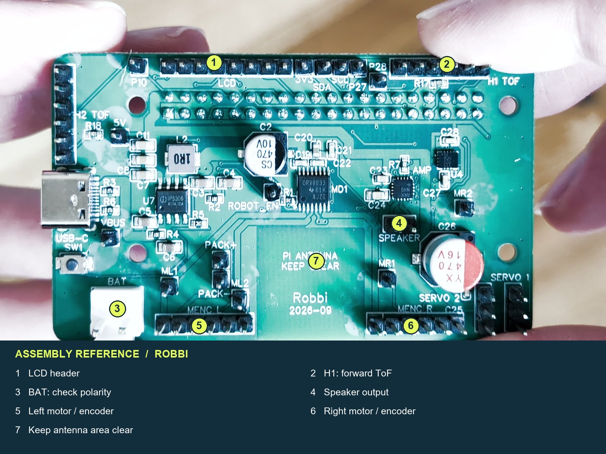
Order list
| Qty | Part | Exact choice | Purchase link |
|---|---|---|---|
| 1 | Assembled Robbi custom PCB | Custom four-layer board • Fabrication + component assembly • Quote required | AliExpress · quote |
| 1 | Raspberry Pi Zero 2 W | 1 board • Wi-Fi • Header already soldered | Raspberry Pi |
| 1 | High-quality microSD card | 32 GB minimum • 64 or 128 GB recommended • A1 or A2 • Class 10 / UHS-I | AliExpress |
| 2 | N20 motors with encoders | 2 matching motors • 3 V • 75 RPM • Encoders | AliExpress |
| As required | MR128ZZ miniature bearings | MR128ZZ • 8 mm bore • 12 mm outside • 3.5 mm thick | AliExpress |
| 1 | TOF400C-VL53L1 sensor | 1 module • Select TOF400C-VL53L1 | AliExpress |
| 1 | TENSTAR ROBOT SPI display | 1 display • 1.69 inch • 240 × 280 • 8 pins | AliExpress |
| 1 | IMX219 wide-angle camera | 1 camera • IMX219 • 160° lens (second option) • CSI | AliExpress |
| 1 | 20 mm miniature speaker | 1 speaker • 20 mm diameter • 8 Ω / 8R • 0.5 W | AliExpress |
| 1 | 18650 holder with wires | Single cell • With wires • 76 × 21 × 18.4 mm envelope; 20.4 mm loaded height | AliExpress |
| 1 | 18650 rechargeable cell | 1 cell • About 3000 mAh • Genuine high-drain Li-ion | AliExpress |
| 1 | USB-C 18650 charger | 1 charger • External slot charger • USB-C input | AliExpress |
| 1 | Micro-USB OTG adapter — LEFT | 1 adapter • LEFT • Micro-USB male → USB-A female | AliExpress |
| 1 | Mini USB microphone | 1 microphone • USB-A • Built-in microphone | AliExpress |
| 1 | VH3.96 battery connector | 1 cable • VH series • 3.96 mm pitch • 2P | AliExpress |
| As required | M2 heat-set inserts | M2 internal thread • Outside size must match the model | AliExpress |
| 6 screws + 6 nuts, plus unchanged fixings | M2 socket-head screws and nuts | 4 × 20 mm, 1 × 10 mm, 1 × 6 mm for revised assemblies; compact washers below | AliExpress |
| 2 screws + 2 nuts | M3 × 12 mm head screws and nuts | Socket heads • 12 mm under head • 7 × 0.5 mm washers below | AliExpress · select matching dimensions |
| As required | Female-to-female jumper wires | F–F • Sockets at both ends • 2.54 mm headers | AliExpress |
| 1 | 16 cm Pi Zero camera adapter ribbon | 16 cm; 22-pin / 0.5 mm pitch to 15-pin / 1.0 mm pitch | AliExpress |
| Assortment | Heat shrink or insulation tape | Small assortment / one roll • Electrical insulation | AliExpress |
| Access to 1 set | Soldering equipment | Use an existing setup or buy one • Electronics soldering | AliExpress |
| 1 set | Precision screwdriver and bits | 1 set • Hex H1.5 / H2.0 / H2.5 • Small Phillips bits | AliExpress |
| Access to 1 set | Hot glue and glue gun | Access to a glue gun • Matching glue sticks | AliExpress |
| 1 complete print set | 3D printing access or service | One complete set of Robbi’s printed parts • Custom quote required | AliExpress · quote |
“As required” means the count depends on the assembly; pack sizes are not the number used in one robot. Confirm hardware quantities and screw lengths from the released assembly files. For the custom PCB, use the manufacturing package and request a quote for four-layer fabrication and assembly; the service listing is not a ready-made Robbi board.
Also provide a suitable USB power source/cable for the isolated Pi setup, a microSD reader, a multimeter and the hand tools in preparation. Battery-lead protection and PCB spacing hardware must be specified in the release; they are not optional omissions just because their exact parts are unresolved.
October 2026 fasteners and holder fit
The revised mechanical design specifies the hardware below. These are CAD fit specifications, not yet a physically validated assembly. Screw length is measured under the head. Purchase links are listing references; check the actual selected length, head style, nut size and washer dimensions, rather than accepting a default option or pack count.
| Location | Required for the revised design |
|---|---|
| Rear cover / Pi / PCB stack | 4 × M2 × 20 socket-head screws, 4 × M2 nuts (4 mm AF × 1.6 mm thick), 4 × compact washers (about 4.5 mm OD × 0.3 mm thick), and 4 printed 11 mm spacers. |
| Head to chassis | 2 × M3 × 12 socket-head screws, 2 × M3 nuts (5.5 mm AF × 2.4 mm thick), 2 × washers (7 mm OD × 0.5 mm thick). Do not substitute the old 14 mm purchase selection without checking fit. |
| Head service cover | 1 × M2 × 6 socket-head screw and 1 × M2 nut (4 mm AF × 1.6 mm thick). |
| New motor clip | 1 × M2 × 10 socket-head screw and 1 × M2 nut (4 mm AF × 1.6 mm thick); no washer. |
| Holder / ToF | Suitable adhesive for the empty holder; two small hot-glue fillets for the ToF. No holder or ToF mounting screw. |
The M2 subtotal covers only the revised assemblies in this table; side-panel, rear-cover and camera attachment hardware still needs matching to the preserved interfaces. Check whether an assortment actually includes the specified compact washers. The existing M2 and M3 listing links do not guarantee every required nut/washer is included.
The holder fit is based on 76 × 21 × 18.4 mm empty and 20.4 mm loaded height, with only small modelled clearances. Trial-fit the actual holder, cell, wires and both panels before gluing the empty holder. Its central hole stays unused. The cell-service envelope was checked up to 70 mm long × Ø18.6 mm; actual spring-contact travel remains unverified.
Use 1.5 mm and 2.5 mm Allen keys for ordinary M2/M3 socket heads. Board-stack access assumes a slim 4 mm AF nut driver, no more than 5.5 mm outside diameter. See print quantities and materials, assembly and remaining fit checks.
Recognise the important variants
| Motor and cable | Display pin labels | Forward ToF |
|---|---|---|
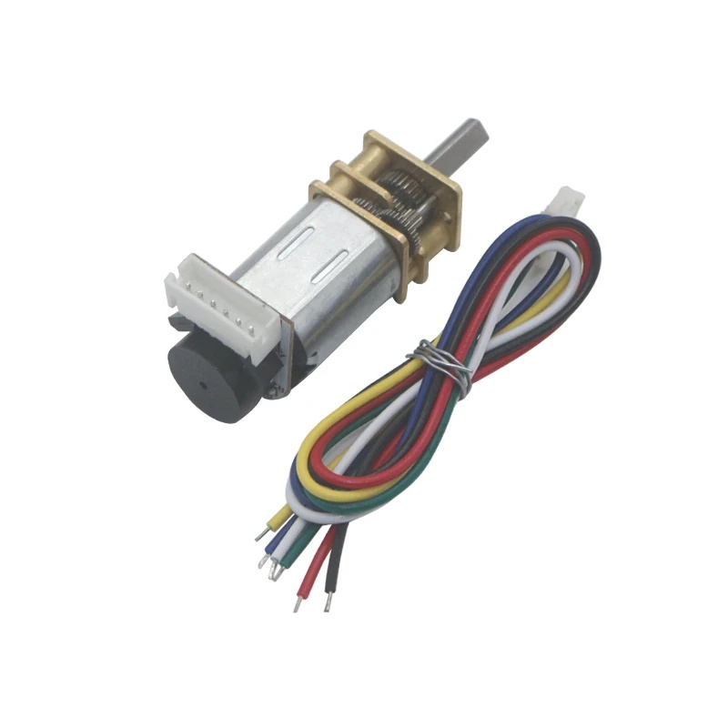 |
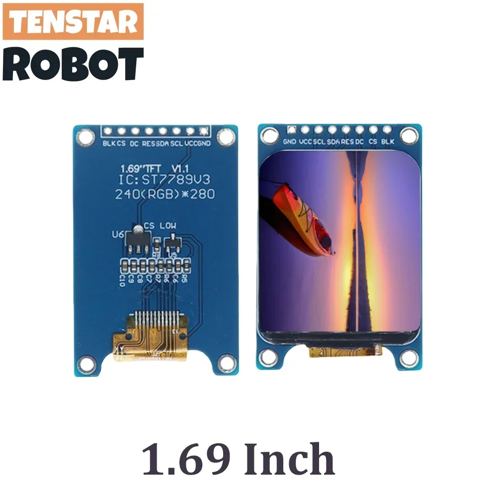 |
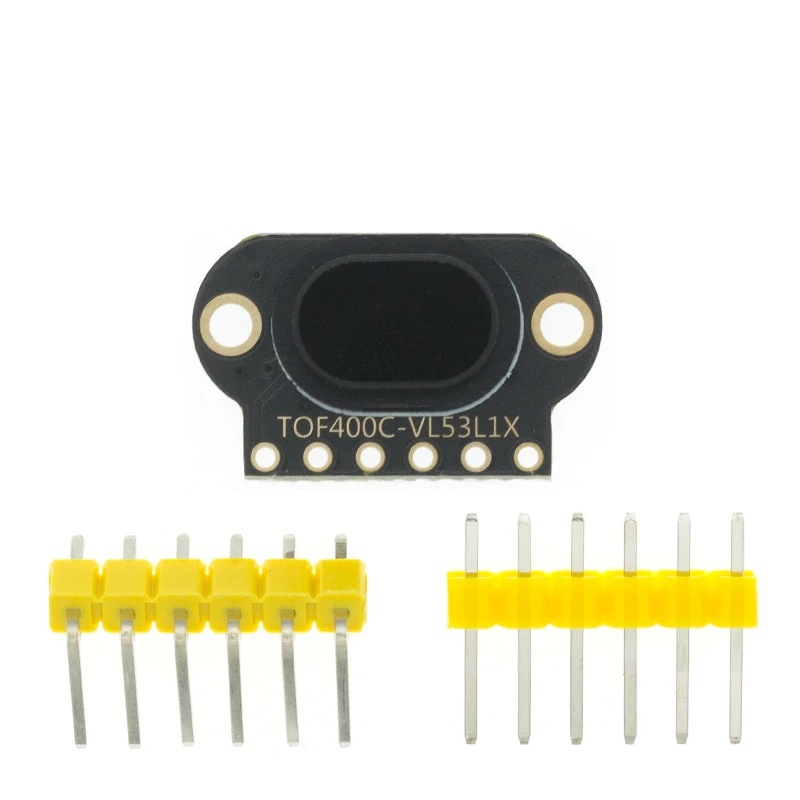 |
| Select 3 V / 75 RPM, two motors, with cables. | Select 240 × 280, eight pins. Match signals when wiring; VCC/GND differ from the custom PCB's order. | Select TOF400C-VL53L1X. Keep the optical opening unobstructed. |
| OTG adapter | Battery cable contact type | M2 screw head |
|---|---|---|
 |
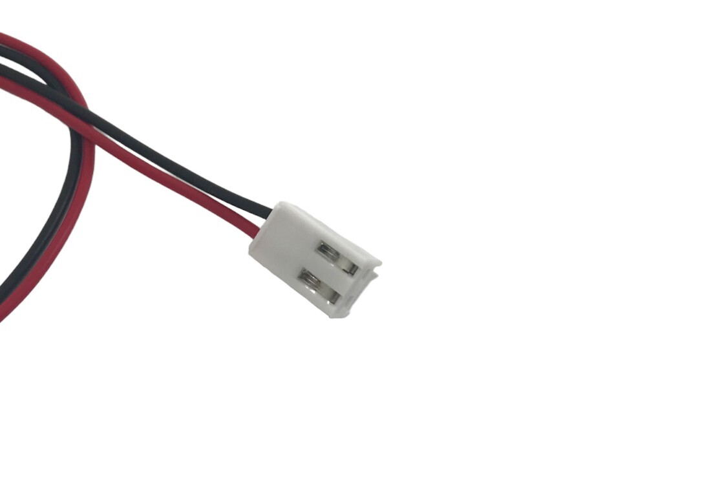 |
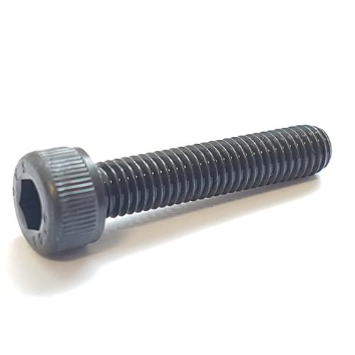 |
| Left-angle, data-capable. | VH3.96, 2-pin, female socket contacts, with leads. | Cylindrical socket head, not countersunk. The revised head uses M3 × 12 mm; pack counts are not build quantities. |
The reference pictures identify shape and pin labels. For voltage, speed, size and quantity, use the order table above.
Check deliveries before building
- Count two matching 3V75RPM encoder motors and their matching cables. Check the label and rear encoder board, not just the product title.
- Confirm Zero 2 W, with the 40-pin header already soldered.
- Confirm the 1.69-inch, eight-pin, 240 × 280 SPI display and the exact ToF board outline.
- Check the camera ribbon: use 16 cm with different widths at its two ends.
- Check the battery plug: VH3.96, 2-pin, female socket contacts, and matching polarity.
- Check actual screw lengths, nuts and compact washers against the revision table. The head uses M3 × 12 mm; the specified M2 locations use 20, 10 and 6 mm socket-head screws. Unchanged fixings still need confirmation.
- Keep cells and all power leads disconnected while checking fit.
Selection details
Expand the component-by-component buying notes
Raspberry Pi Zero 2 W
The exact Zero 2 W model, with Wi-Fi and the 40-pin GPIO header already installed and soldered. Ask for 已焊接排针; a loose header in the box is not enough.
Avoid: The older Zero W / Zero WH, an unsoldered board, or a listing labelled only “Zero 2” without confirmation of Wi-Fi and the exact model.
High-quality microSD card
Choose a high-quality microSD card with at least 32 GB. 64 or 128 GB is recommended for extra room. Look for A1 or A2 and Class 10 / UHS-I; no particular brand is required. Buy from a reputable seller. The linked card is an example, not a brand requirement. The small microSD card goes into the Pi; an SD adapter is optional for your computer.
Avoid: Full-size SD cards, an empty adapter, unbranded cards or suspiciously cheap counterfeits. Advertised reader speeds are not the speed you will get on the Pi.
N20 motors with encoders
Select “3V75RPM”. Buy two identical N20 / JGA12-N20 units with rear encoder boards. Confirm matching encoder cables are included.
Avoid: Plain N20 motors without encoders; 6 V or 12 V versions; 750 RPM, 150 RPM or another speed.
MR128ZZ miniature bearings
Select “MR128ZZ 8x12x3.5mm”. Check all three dimensions: 8 mm inner diameter, 12 mm outer diameter and 3.5 mm width. The linked listing sells a 10-piece pack; use the assembly instructions for the number needed.
Avoid: MR128-2.5 (only 2.5 mm thick), MR148ZZ (14 mm outside), open or rubber-sealed variants, or flanged bearings in place of this plain MR128ZZ.
TOF400C-VL53L1 sensor
Choose “TOF400C-VL53L1”. Look for the TOF400C-VL53L1X board marking. Match its outline, mounting holes and pin labels; check whether headers arrive soldered.
Avoid: TOF050C / VL6180 or TOF200C / VL53L0X. Another VL53L1X module can have a different board shape and pinout.
TENSTAR ROBOT SPI display
Select “1.69 Inch”. Look for the eight-pin SPI board, ST7789-family controller and 240(RGB) × 280 marking on the display board.
Avoid: 1.54-inch or 1.9-inch variants; 240 × 240 or 240 × 320 panels; a different pin count or interface. Ignore the listing’s incorrect automatic 320 × 240 summary.
IMX219 wide-angle camera
The linked listing’s 160° option was recommended (reported as the second option). Before ordering, confirm it uses an IMX219 sensor and a 15-pin camera connector; check board size, mounting holes and lens clearance against the printed mount. Use the separate 22-to-15-pin Pi Zero camera ribbon.
Avoid: OV5647 / 5 MP cameras, narrow-angle lenses, USB webcams or bulky IR assemblies that do not fit the mount.
20 mm miniature speaker
Select “20mm”, and verify 8R / 8 Ω and 0.5 W. Prefer attached leads; check that the plug matches the build or can be reterminated.
Avoid: 23 / 28 / 30 / 36 mm or larger versions, 4 Ω speakers, buzzers or powered USB speakers.
18650 holder with wires
Select “1 Section with line”. The October seat was modelled for a 76 × 21 × 18.4 mm holder, 20.4 mm high with the cell fitted. Check the purchased holder's actual dimensions, contacts, lead exit and supported cell length; a generic single-cell holder is not guaranteed to fit.
Avoid: The version without wires, a two- to four-cell holder, or an AA / 14500 holder. A holder alone is not a charger.
18650 rechargeable cell
A traceable genuine single 18650 Li-ion cell with dimensions, charge/discharge limits and protection compatible with the approved power circuit. Molicel P30B is a reference example, not an instruction to fit an unprotected cell to an unverified circuit.
Avoid: Anonymous cells with implausible capacity labels, reclaimed cells, 21700 / 14500 sizes or LiFePO₄. A longer protected/button-top cell may not fit.
USB-C 18650 charger
A USB-C charger for 3.6 / 3.7 V Li-ion 18650 cells, charging to 4.2 V. Check the actual input socket and use a charge current within the cell manufacturer’s limit. The linked XTAR ANT MC1 Plus is a USB-C reference example.
Avoid: An older micro-USB version, a bare TP4056 board, an empty holder, or a charger intended only for NiMH or 1.5 V batteries.
Micro-USB OTG adapter — LEFT
Choose “Left” in the original listing. It must support OTG and data. For other sellers, check that the plug direction leaves the microphone inside the body with the USB data port accessible.
Avoid: “Right”, USB-C, mini-USB or charge-only adapters. Left/right naming can vary between sellers.
Mini USB microphone
A complete microphone dongle with driver-free USB Audio / Linux / Raspberry Pi compatibility. Match the small physical size shown.
Avoid: A USB Bluetooth receiver, a sound card with only empty audio sockets, a 3.5 mm-only mic, or an I²S microphone breakout.
VH3.96 battery connector
Select “2P”. Buy the VH3.96 housing with crimped wires attached; the linked listing offers 20 cm leads. Check the latch, mating socket and polarity against the PCB. Required cable end is FEMALE, with recessed socket contacts and no exposed pins. Verify polarity with a meter; wire colour alone is insufficient.
Avoid: 3P–10P, a bare housing, or a PCB header alone. PH2.0, XH2.50 / 2.54 and other “JST 2-pin” families are not interchangeable.
M2 heat-set inserts
M2 inserts intended for heat installation. Match outer diameter, length and quantity to the printed parts. The linked assortment contains several sizes, including M2.
Avoid: M2.5 / M3 inserts, ordinary hex nuts or wood inserts. “M2” specifies only the thread; it does not guarantee the outside dimensions fit.
M2 screws and nuts
Choose an M2 socket-head assortment or individual sizes matching the revision table: four 20 mm, one 10 mm and one 6 mm screw, plus six specified M2 nuts and four compact washers for the revised assemblies. The pack count is not the robot's count, and an assortment may omit the correct washers. Unchanged side-panel/rear-cover/camera fixings still require confirmation.
Avoid: M2.5 / M3 kits by mistake, self-tapping screws, or screws that are too long for the mounting position.
M3 × 12 mm head screws
For the October fixed head, obtain two M3 × 12 mm socket-head screws, two 5.5 mm AF × 2.4 mm nuts and two 7 mm OD × 0.5 mm washers. Select by actual dimensions; the old linked purchase used a 14 mm option, which is not the revised head specification. Check that the listing offers the required size and source matching nuts/washers separately if needed.
Avoid: Reusing a 14 mm screw without checking depth, M3 screws in M2 threads, or treating a seller's pack size as the quantity fitted to the robot.
Female-to-female jumper wires
Choose F-F / Female-Female / 母对母. Both ends must have sockets. Select a length and wire count that suit the wiring route without tension.
Avoid: M-M / 公对公 or M-F / 公对母. The listing’s default selection may be the wrong type.
16 cm Pi Zero camera adapter ribbon
Use a 16 cm Pi Zero adapter ribbon, with a 22-pin narrow end and a 15-pin wide end. Check both connector widths and contact orientation; do not buy 15-to-15 or 22-to-22 by mistake.
Avoid: A different length or connector type without checking the fit. Verify that the selected listing option is 16 cm.
Heat shrink or insulation tape
Heat-shrink sizes that fit over the joints and shrink snugly, or tape explicitly rated for electrical insulation. No particular brand is required.
Avoid: Packing tape, masking tape, conductive copper tape, or tubing too large to grip after shrinking.
Soldering equipment
A temperature-controlled iron, suitable tip, stand, solder wire and electronics flux. Choose a plug and input voltage suitable for your local mains supply.
Avoid: 110 V-only equipment, plumbing acid flux, a welding machine, or a hot-air-only tool in place of an electronics soldering iron.
Precision screwdriver and bits
Check the bit list includes H1.5 and H2.5 hex bits: the DIN 912 socket-head screws shown use 1.5 mm hex for M2 and 2.5 mm for M3. H2.0 and small Phillips bits make the set more versatile. Match the bit to the actual screw head.
Avoid: Phillips-only or Torx-only sets, kits missing the small hex sizes, or a large powered driver that can strip these tiny screws.
Hot glue and glue gun
Glue sticks whose diameter matches the gun. If buying a mains gun, choose a plug and voltage suitable for your local mains supply. Check whether sticks are included.
Avoid: Sticks in the wrong diameter, or ordering only a gun when you also need glue. Do not substitute superglue or conductive adhesive without checking the assembly.
3D printing access or service
Send the confirmed printable parts, quantities, scale, material and settings for a custom quote. Agree the printing process and tolerances before ordering. The listing price is not the cost of a full Robbi print set. Use the printing notes to prepare the files; the complete assembly STL is not a single printable part.
Avoid: A random robot shell, resized parts or an incomplete print order. Check compatibility before changing material or printing process.
2. Prepare tools and printed parts

Guide home · ← Parts · Software →
Tools
| Tool | Used for |
|---|---|
| 3D printer, makerspace or print service | Body, head, wheels and internal mounts |
| Temperature-controlled soldering iron, stand, solder and electronics flux | Wire joints, omitted through-hole headers and heat-set inserts with an appropriate tip |
| 1.5 mm and 2.5 mm Allen keys, plus small Phillips bits | M2 and M3 socket-head screws; a long straight leg must reach the motor clip/head fasteners |
| Slim 4 mm AF nut driver, outside diameter no more than 5.5 mm | Compact M2 board-stack nuts; check actual hardware |
| Flush cutters, wire stripper, tweezers and small pliers | Harnesses, side-loaded clip nut and split button pin |
| Heat-shrink tubing and suitable heat source | Insulating individual joints |
| Hot-glue gun and adhesive suitable for the holder/plastic | Two ToF glue fillets and accessible holder retention |
| Multimeter with continuity and DC voltage ranges | Shorts, polarity and rail measurements |
| Deburring tool, small file and calipers | Support cleanup and actual printed fits |
| microSD reader and computer | Flashing the OS and copying the release |
| Tape measure, tape and a flat test area | Wheel and motion calibration |
| Optional current-limited bench supply | First power-up only with a verified input arrangement and limit |
Use a nonconductive work surface and a tray for fasteners. Ventilate soldering work. Prepare holder leads with the cell removed; do not solder directly to a cell.
Print the matching release
Warning
The 13 October 2026 enclosure iteration has not yet been physically validated. CAD and reference slicing checks do not establish printed fit, strength or switch operation. Plan a dry assembly and expect possible adjustment or reprinting.
Start with the individual STLs and reference 3MF projects. Use this matching chassis, both panels, new front-fastened clip, rear cover, four 11 mm spacers, three button pieces and fixed head/cover together. Do not substitute earlier clip, panel or head parts.
The original robo_4_astra.zip remains an unchanged assembly reference, including modelled purchased components and the original wheel/tread shapes. Do not print the entire STL as one object or use an automatic split as a finished kit. The individual October exports avoid that ambiguity for the revised enclosure pieces. Separate wheel/tread print settings still need confirmation.
Import individual files in millimetres at 100% scale and keep their supplied orientation. The 3MF projects are unsliced reference projects for an A1 / 0.4 mm nozzle, not printer-ready instructions. Choose the actual machine, material, plate and nozzle, inspect supports and thin walls, and slice again.
| Group | Preparation / check |
|---|---|
| Chassis and rear cover | Clean supports from motor seats, cover keys, Pi rails, USB opening and cable passages. |
| Side panels | Preserve the 0.8 mm battery-pocket skins and locating rims; check preview continuity. |
| Motor clip | Use the new front-fastened part; the solid reference profile and gentle tightening matter near thin motor walls. |
| Button rocker, keeper and pin | PETG / 0.16 mm reference; preserve the leaf, return spring, pin diameter and split fork. Clip the pin-only brim gently. |
| Head carrier and cover | Clean the hollow neck and sliding hooks; protect the four long cover posts. |
| Wheels, treads and bearings | Check D-shaft fit, concentricity, bearing fit and actual tread material separately. |
Print the button/USB coupon and three button parts first. The optional ToF coupon checks its local seat. These small tests do not prove real-stack switch actuation, full USB plug seating or sensor performance through the final shell. Use the part-by-part printing table for supports, layer height, walls, infill and exceptions.
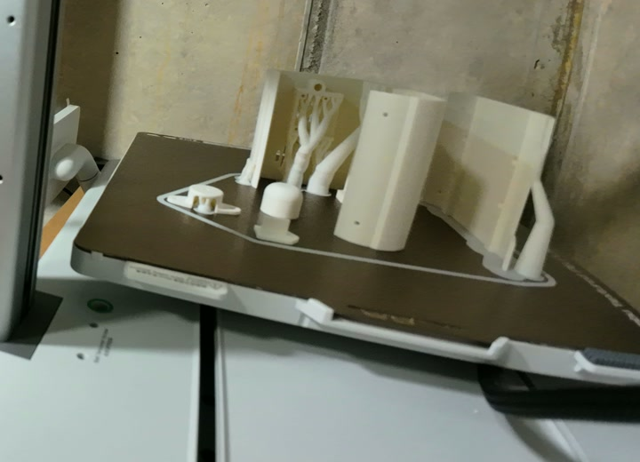
Earlier print layout, not the reference orientation for every current part.
Do not use the software's robbi-body.stl and robbi-head.stl preview models as a complete print kit. Do not rescale the enclosure to fix a local tight fit: this also moves the bearing, board and screw interfaces.
Clean and dry-fit
- Remove supports, strings and burrs without changing mounting datums, bearing seats or flexure dimensions.
- Test the button/coupon motion and actual USB cable overmold. Separately check the real switch and complete plug seating with the seated stack later.
- Dry-fit the motors and new clip before the holder, electronics, head or camera. Check actual motor retention and the thin chassis floor/wall.
- Trial-fit the loaded holder and both panels, check lead exits and contacts, then remove the cell before bonding the empty holder. Its central hole stays unused.
- Dry-fit the real Pi/header/custom PCB on four 11 mm spacers. Check actual Pi thickness and header engagement before tightening the four outside-entry screws.
- Seat the display on its studs and offer the service cover with no wires first. It must meet the rim without screw force or pressure on the glass/components.
- Follow the current assembly order: the stack enters through the GPIO side with the head off, held 4 mm outward before moving inward. Keep cell and USB absent during the first complete fit.
Inserts and bearings
Fit the matching side-panel heat-set inserts while the body is empty, as described in assembly. Their outside diameter and length must match the actual pockets; test on a spare boss if changing printer or material. The new clip and head use their specified captive nuts, not substitute inserts.
The bearing is MR128ZZ, 8 × 12 × 3.5 mm, in the circular body recess around the shaft opening. The bearing and wheel close-ups show the seats and D-shaped hub. Press on the outer race to seat a bearing; align shaft and hub flats and avoid hammering the gearbox. Stop if plastic splits or distorts.
Checkpoint: the complete unpowered enclosure fits freely; actual wires, camera ribbon, holder and board stack have clearance; the button releases; the head cover seats without pressure. Record the print revision, settings and unresolved fits in build-record.csv.
Software installation
Guide home · Complete setup walkthrough · Next: bench tests
Target: Raspberry Pi Zero 2 W, Raspberry Pi OS Bookworm Lite 64-bit (Legacy), Python 3.11 or 3.12. Use an empty microSD card for the first install. The installer preserves an existing installation by refusing to overwrite it; it is not an update command.
1. Prepare the card and connect
In Raspberry Pi Imager choose the supported OS and set a hostname such as robbi, your own Linux username and password, the correct Wi-Fi country, your 2.4 GHz Wi-Fi network/password, and SSH access. These initial settings are needed before SSH can reach the Pi. Boot the Pi and connect using ssh YOUR_LINUX_USERNAME@robbi.local, or its router-assigned IP address. Use an interactive terminal, not a background SSH command.
2. Run one installer command
Run as your normal Linux user, without putting sudo in front:
curl --proto '=https' --tlsv1.2 -fsSL https://raw.githubusercontent.com/ace-builder/Robbi/main/software/install.sh | bash
The script resolves a GitHub commit, verifies its bootstrap helper, downloads that pinned source snapshot, and checks every runtime file against the included manifest before making system changes. A separate GitHub Release is not required. Only the runtime is extracted; CAD, source artwork and tests are left off the Pi. Internet access and at least 2 GiB free storage are required. Installation asks for your normal sudo password to install OS packages and the service.
If you already downloaded or cloned the repository, run bash software/install.sh from the repository root (or bash install.sh inside software/). bash install.sh --plan describes the steps without installing anything. For a specific published tag or commit, download that version's software/install.sh and use --version TAG_OR_COMMIT.
3. Complete terminal setup
The wizard guides these steps:
- Owner: the name Robbi should use; this is saved only on your Pi.
- Dashboard access: choose a password, or explicitly disable sign-in for a trusted LAN. The dashboard username is
robbi, separate from your Linux account. - Wi-Fi: test the current connection and optionally save another network. Its password is hidden; changing networks waits for a deliberate reboot so SSH stays connected.
- LLM: choose OpenAI, OpenRouter or an OpenAI-compatible local server, enter its base URL/model and hidden API key. A local server runs on your own computer; enter its reachable LAN address. An optional small, billable connection test checks the selected model.
- Speech: add a separate speech-recognition key when needed. Optional ElevenLabs setup asks for your own API key, available voice ID and model. No private voice ID or account key is supplied.
- Web search: optionally enter a Tavily key. Free default weather does not need a key. Other app providers can be configured later in the dashboard.
- Telegram: optional. The wizard explains how to create a bot and find your numeric Telegram user ID, then allows only that private chat. Robot actions and photos stay off until enabled separately.
- Checks: test network access and list hardware/audio interfaces, then start the service and show the dashboard address. Missing peripherals do not prevent dashboard startup. No motors move during setup.
API keys go in ~/robbi-v2/.env.secrets with owner-only permissions; settings in ~/robbi-v2/config/robot.yaml; memories and generated data in ~/robbi-v2/var/. These files must never be uploaded. You can rerun robbi-setup later or change provider keys/model settings in the dashboard.
4. Reboot and finish in the dashboard
Reboot when prompted: sudo reboot. SPI, I2C, camera/audio and any newly saved Wi-Fi settings take effect. Open http://robbi.local:8082 or the router-assigned IP on port 8082, using the chosen dashboard password.
Use Overview to check camera, display, speaker, microphone, front ToF and IMU health. Follow bench tests and calibration. Enroll your own wake phrase in the Wake word tab. Check wheel directions and encoder calibration with the wheels raised before enabling movement. Motors, unsupervised autonomy and wake listening are not enabled blindly by installation.
The public dashboard includes apps, media/audio, manual driving, IMU visualization, experimental mapping, configurable providers and Conversation Lab. It has no Filming tab or private training-recorder routes. Memories and history start empty. Robbi App Hub is a client connection, defaulting to https://ai-tier.com/apphub; the Hub website is not installed on the Pi. App permissions require owner approval once and are retained locally.
Troubleshooting
- Continue an interrupted first install by running the same snapshot's installer again. Completed steps are recorded; a different snapshot refuses to overwrite an existing installation.
- Reopen initial configuration with
robbi-setup. - Service status:
systemctl status robbi-v2.service. - Logs:
journalctl -u robbi-v2.service -n 80 --no-pager. - Restart:
sudo systemctl restart robbi-v2.service. - For a wrong model/key, edit Providers in the dashboard or rerun setup; a failed provider does not require reinstalling the OS.
- The installer is validated with offline/mocked setup tests; a fresh-card end-to-end install and your actual hardware still need physical verification.
4. Test the electronics on the bench
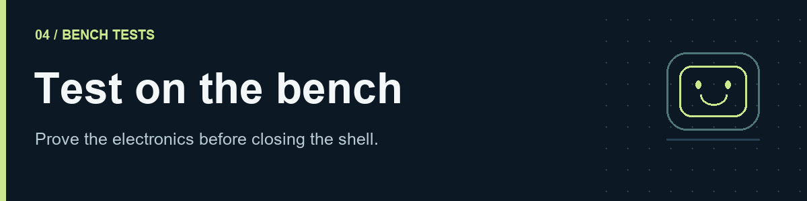
Guide home · ← Software · Assembly →
Test the electronics on a nonconductive work surface before fitting them inside the body. The order is: bare PCB → Pi/PCB connection → connected peripherals. The motors remain disconnected.
Before connecting power
The board is labelled Robbi 2026-09. The manufacturing package supplied with this guide includes IP5306, DRV8833, MAX98357A and LSM6DS3TR-C, matching the visible parts. Older design folders describe a different BQ25895/TPS61088 power circuit and incompatible connector assignments. Do not combine those older schematics with this board.
Use the connector drawing and pin-by-pin wiring tables. They cover the supplied September manufacturing package, including pin 1, display power-pin reversal, encoder feedback and battery polarity. Check each finished harness against those tables before applying power.
The photograph identifies connector locations; the top-view drawing identifies pin 1. Label each wire by signal at both ends. The display needs special care: its GND/VCC order differs from the PCB.

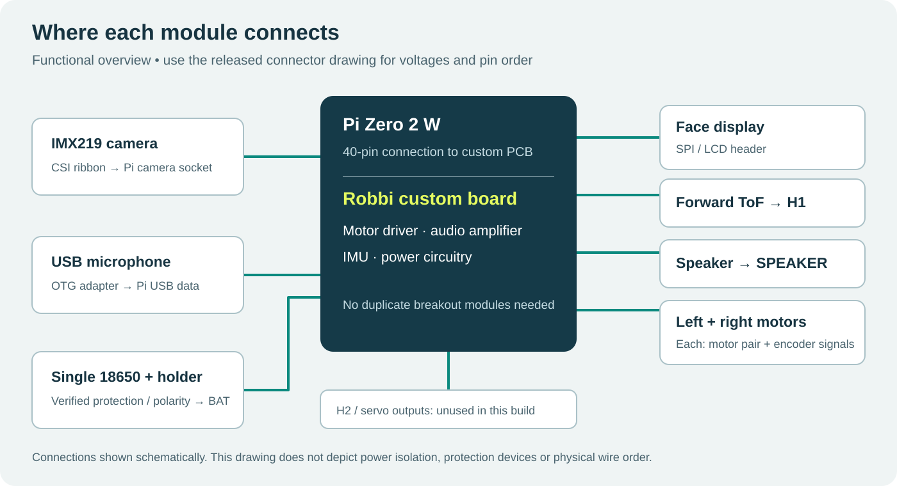
Functional overview, not a wiring pinout. Power protection and the released PCB's rail design must be verified separately.
1. Test the bare PCB
- Remove the cell and disconnect all USB power. Inspect both sides of the board for solder bridges, loose strands, bent pins and offset connectors.
- Verify battery polarity from the holder to
BAT, the specified lead protection, and the absence of a persistent short across each supply. A brief continuity beep while capacitors charge is not a complete diagnosis. - Check the underside 40-pin socket orientation. U6 belongs on the back of the board and is marked for hand soldering in the manufacturing files.
- Leave the Pi, motors and every peripheral disconnected. Attach only the battery using the correct, verified connector.
- Press the power button. Connecting the battery alone does not switch the PCB on.
- Put the black probe on PACK−. Measure PACK+ (battery rail) and 5V (nominal 5 V output). The motor driver uses the battery rail. Do not require 3.3 V at this stage: that rail is supplied by the Pi, which is not attached yet. Record the actual readings in the build record.
- Switch off and disconnect the battery before joining the Pi or changing any connection.
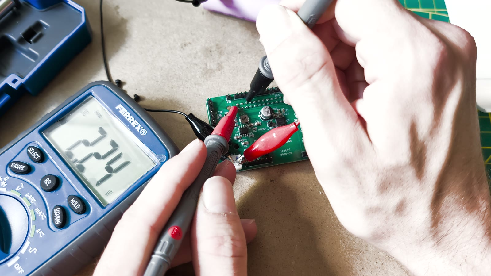
Important
The power test-point drawing identifies PACK−, PACK+ and 5V. Their names establish nominal functions; measured unloaded/loaded ranges still need to be recorded. The meter reading in this illustration is not a target value. The driver is battery-fed, so verify the duty/load limit for the selected 3 V motors before wheel tests.
2. Join the PCB directly to the Pi
- Keep both battery and Pi USB power disconnected.
- Align the PCB's underside female socket with all 40 pins on the Pi. Check both rows for a one-pin or one-row offset.
- Hold the boards parallel and press evenly at the connector. Support the boards instead of pressing on unsupported corners.
- Check the spacing and clearance from conductive fasteners.
- Reconnect the battery, press the power button and let the Pi start. With the black probe on PACK−, check 3V3 for the nominal 3.3 V logic rail. Shut the Pi down and remove power again before adding peripherals.
There are no jumper cables between these two boards: the socket mates directly with the Pi's header. You will make this same connection again after the Pi is screwed onto the back panel.
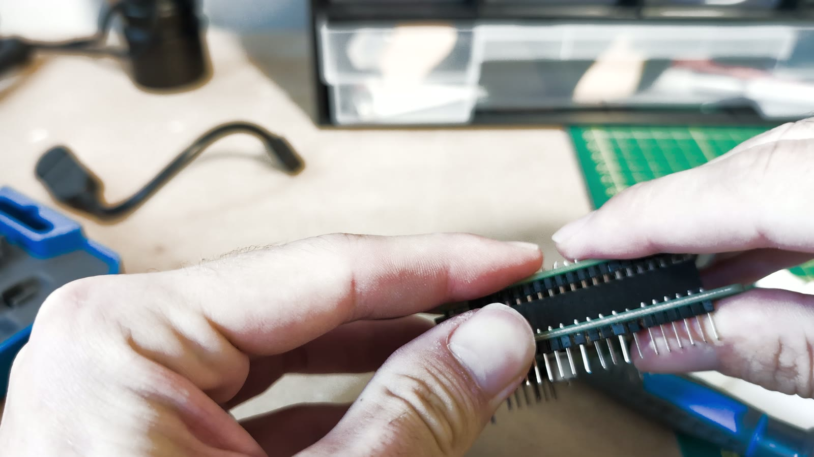
3. Connect the peripherals on the bench
Use the pin-by-pin tables to connect the LCD, microphone, camera, ToF sensor and speaker while power is off. The table below is a final connection checklist. Connect the camera ribbon squarely and close both latches. The USB microphone uses the Pi's USB data port through the OTG adapter, not PWR IN.
| Connection | Signals to identify before plugging in | Check |
|---|---|---|
| Pi ↔ custom board | All 40 header positions, including 5 V, 3.3 V and ground | Full alignment; no skipped row/pin |
| Display ↔ LCD header | VCC, GND, clock, data, reset, D/C, CS, backlight | Match signal labels, not wire colour; confirm VCC and backlight supply |
| Left motor/encoder ↔ left connector | Motor pair, encoder supply, encoder ground, A and B | Encoder power and motor power are distinct signals |
| Right motor/encoder ↔ right connector | Motor pair, encoder supply, encoder ground, A and B | Confirm the released right-B route; see repair note below |
| Forward ToF ↔ H1 | Supply, ground, SDA, SCL, XSHUT; any unused interrupt pin | Exact module voltage and pin order; H2 stays empty |
| Speaker ↔ SPEAKER | Amplifier's two speaker outputs | Neither lead should be assumed to be ground |
| Camera ↔ Pi CSI | Matching ribbon ends and contact orientation | Power off; latches fully closed |
| Microphone ↔ Pi USB | OTG data adapter and USB microphone | Use USB data port, not PWR IN |
| Cell holder ↔ BAT | Verified positive and negative | Female VH3.96 two-pin lead; polarity measured before insertion |
Reconnect the battery, press the power button, and let the installed service start with config/robot.yaml. Do not also feed the Pi through its USB power socket unless the released power circuit explicitly supports it. Leave motor output disabled and motor leads unplugged.
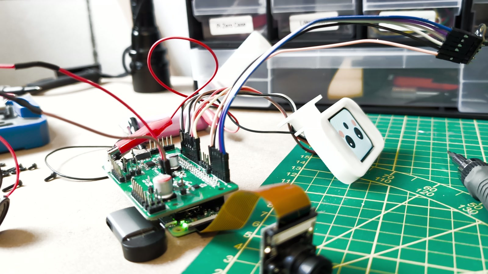
Use insulated, secure connections for your build. Temporary clip leads are not a finished battery harness.
4. Check each subsystem
Use dashboard Settings or ~/robbi-v2/config/robot.yaml for all edits below. After manual edits, run sudo systemctl restart robbi-v2.service. The installer already enables the display, camera, front ToF and IMU; verify those settings rather than selecting another profile. Keep hardware.enable_motors: false and runtime.calibration_confirmed: false.
Display
Set hardware.enable_lcd: true. Restart and select a face. The physical panel is 240 × 280; the runtime draws at 280 × 240 with offset_left=20, DC25, reset24 and SPI0/CE0. Those values are currently in src/robot/media.py.
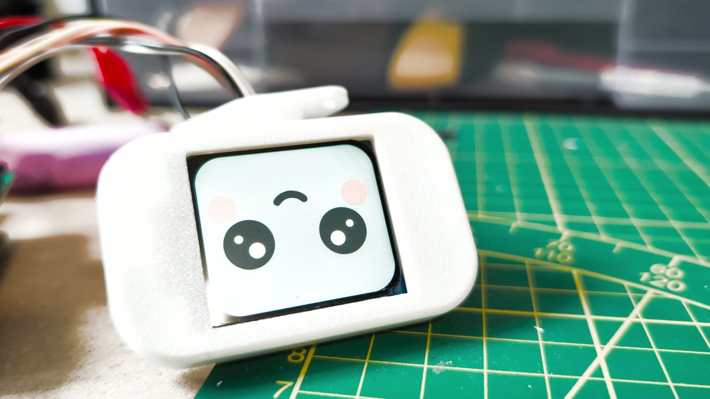
Check that a complete face is visible and stable. If the backlight is on but the image is missing, recheck the signal labels and selected interface before changing geometry.
Camera
Stop Robbi with sudo systemctl stop robbi-v2.service, then test camera detection and capture:
rpicam-hello --list-cameras
rpicam-still -n -t 2000 -o camera-check.jpg
Confirm an IMX219 is detected and inspect the actual image for focus, obstruction and orientation. If the third-party module is not auto-detected, check its manufacturer's overlay instructions rather than enabling the legacy camera stack. Bookworm uses rpicam-* applications; see the official camera software guide.
Then confirm camera.enabled: true, run sudo systemctl start robbi-v2.service and check that the dashboard image updates when you move an object. Stop the runtime before using rpicam-* again, because both would need the camera.
Microphone and speaker
First list ALSA devices:
arecord -l
aplay -l
Choose the actual card names shown on your Pi; do not rely on card numbers remaining constant. With the runtime stopped, record a short sample (substitute the USB mic's card name for Device if necessary):
arecord -D plughw:CARD=Device,DEV=0 -f S16_LE -r 16000 -c 1 -d 5 mic-check.wav
Play the file on your computer to check capture before testing the tiny speaker. Configure audio.mic_device and audio.alsa_device in config/robot.yaml to match the device list. For speaker testing, start with a quiet speech sample and low software volume; the specified speaker is only 0.5 W. Confirm the amplifier/card name rather than assuming it is always MAX98357A.
Distance and orientation readings
Set tof.enabled: true and imu.enabled: true, leaving tof.h2_enabled: false. Restart and watch live values in diagnostics.
- Move a flat object toward and away from the forward ToF. Values should change plausibly and have fresh timestamps. H1 boots at
0x29and is assigned0x30by the runtime each startup; the configuration's decimal48means0x30. - Gently rotate the robot while holding the body. Orientation should respond in the same sense and settle when held still. The recorded LSM6DS3TR-C device was at
0x6B; identification is more useful than assuming every board uses that address.
Check that both sensors respond here. Perform the full IMU calibration after physical assembly.
5. Shut down before assembly
Record a pass for display, camera, microphone, speaker, forward distance and live orientation. Resolve failures while the components are easy to reach. Shut Linux down, switch off and remove the battery before mounting the electronics.
Checkpoint: each peripheral works on the bench; the bare-board supplies have been checked; motor output is still disabled. Continue to Assembly.
GPIO reference
BCM assignments and the prototype encoder repair
These are BCM numbers. The physical header position is shown separately to avoid mixing the numbering systems. They come from the current runtime and its hardware acceptance notes, not a confirmed new PCB release.
| Function | BCM | Physical header pin |
|---|---|---|
| I²C SDA / SCL | 2 / 3 | 3 / 5 |
| Motor driver enable | 26 | 37 |
| Left motor inputs | 4 / 17 | 7 / 11 |
| Right motor inputs | 22 / 23 | 15 / 16 |
| Left encoder A / B | 27 / 5 | 13 / 29 |
| Right encoder A | 6 | 31 |
| Right encoder B, intended route | 16 | 36 |
| Right encoder B, original robot's repair only | 7 | 26 |
| Display SPI clock / data / CE0 | 11 / 10 / 8 | 23 / 19 / 24 |
| Display D/C / reset | 25 / 24 | 22 / 18 |
| Speaker I²S clock / LR clock / data out | 18 / 19 / 21 | 12 / 35 / 40 |
| Forward H1 ToF XSHUT | 13 | 33 |
| Optional H2 XSHUT, unused here | 12 | 32 |
Encoder selection: the installer writes hardware.right_encoder_b_pin: 16 for the standard board. Match this to the released PCB route before motor tests. Alternate wiring may select 7, which reserves Servo 1; never bridge GPIO7 and GPIO16. Do not rely on a missing-field default: private prototype and public runtime defaults differ. Set the field explicitly to match the physical connection. Use dashboard diagnostics for the selected pin rather than an old standalone probe with hard-coded assignments.
Battery and shutdown
Use the external charger selected in the parts guide for initial charging. Remove the cell from the robot after shutting Linux down and switching power off. Onboard USB charging should only be included in the public instructions after the actual circuit, cell, charge current and thermal/protection checks are confirmed.
The reference P30B is a 3.6 V nominal Li-ion cell with a 4.2 V charge voltage; its current and temperature limits are conditions to respect, not the robot's required operating current. See the manufacturer's cell datasheet. Do not solder to the cell, use a damaged wrapper, or leave its terminals loose among tools.
For normal shutdown, run sudo shutdown -h now, wait for shutdown to finish, then switch the robot off. A physical power cut is available for an immediate fault; it is not the routine Linux shutdown procedure.
Wiring reference · Robbi 2026-09
Guide home · Bench tests · Assembly
Use this page with the supplied gerber_v1.zip, bom_v1.csv and pickandplace_v1.csv. Connector positions come from that placement file; the connections below were checked through the four copper layers and plated holes in that Gerber package. They describe the PCB, not an assumed wire-colour scheme.
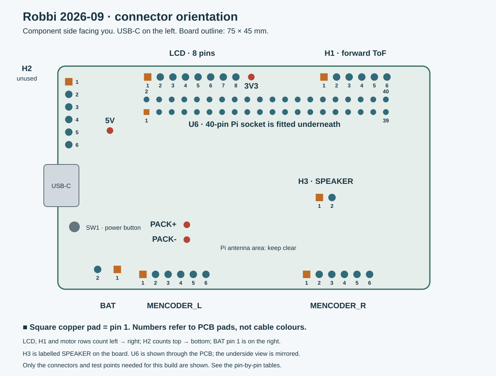
Orient the board
Place the board component side up, USB-C to the left, with the LCD and H1 headers along the top. In this view:
- LCD, H1 and both motor connectors: pin 1 is at the left end.
- H2: pin 1 is at the top end; leave H2 empty in this build.
- BAT: pin 1 is the right-hand pad, connected to battery positive. Pin 2 is negative.
- SPEAKER / H3: pin 1 is on the left.
H3is the manufacturing-file reference;SPEAKERis the board label. - U6: the female 40-pin socket fits on the underside. Do not mirror this top-view drawing when identifying the copper pads.
Pin 1 has a square copper pad. Verify the pad when a fitted connector hides the outline. All wiring and continuity checks below are done with the battery and USB disconnected.
Enclosure routing and access
The October printed revision changes mechanical routing, not this electrical pinout. Preconnect LCD and MENCODER_L before inserting the board stack; keep their remote ends free for routing. Feed display housings individually through the Ø12 mm neck. H2 and servo outputs remain unused in this build. The holder leaves very little LCD wire clearance: use the current assembly order and fit notes, and check actual insulated leads without kinking or pinching them. CAD wire models specify local clearances, not complete harness lengths or different pin assignments.
Display · LCD
| PCB pin | Signal | Connect to |
|---|---|---|
| 1 | 3V3 | VCC |
| 2 | GND | GND |
| 3 | SPI clock | SCL |
| 4 | SPI MOSI | SDA |
| 5 | Reset | RES |
| 6 | Data/command | DC |
| 7 | Chip select | CS |
| 8 | 3V3 backlight | BLK |
The display's first two pins are GND, VCC; the PCB's first two pins are VCC, GND. Match the printed signal names. Do not connect the two eight-pin rows with an unverified straight-through harness. On this display, SDA and SCL are SPI data and clock, not the ToF sensor's I²C bus.
Forward distance sensor · H1
| PCB pin | Signal | Connect to |
|---|---|---|
| 1 | 3V3 | VCC |
| 2 | GND | GND |
| 3 | I2C SDA | SDA |
| 4 | I2C SCL | SCL |
| 5 | Unrouted | Leave unconnected |
| 6 | XSHUT / BCM13 | XSHUT |
Connect five signals: VCC, GND, SDA, SCL and XSHUT. H1 pin 5 has no routed connection; the ToF module's interrupt output is unused. Map by the sensor's printed labels, not by its physical left-to-right order. H1 pin 6 reaches Pi physical pin 33 / BCM13. The spare H2 connector uses physical pin 32 / BCM12 for XSHUT and stays empty.
Motors and encoders
Left/right always means Robbi's viewpoint looking forward. Each six-wire cable carries both motor power and encoder feedback. Encoder VCC is 3.3 V; the motor pair is a separate circuit.
Left · MENCODER_L
| PCB pin | Signal | Connect to |
|---|---|---|
| 1 | Motor terminal 1 | Motor lead 1 |
| 2 | 3V3 encoder supply | Encoder VCC |
| 3 | Encoder A / BCM27 | Encoder A |
| 4 | Encoder B / BCM5 | Encoder B |
| 5 | GND | Encoder GND |
| 6 | Motor terminal 2 | Motor lead 2 |
Right · MENCODER_R
| PCB pin | Signal | Connect to |
|---|---|---|
| 1 | Motor terminal 1 | Motor lead 1 |
| 2 | 3V3 encoder supply | Encoder VCC |
| 3 | Encoder A / BCM6 | Encoder A |
| 4 | Encoder B / BCM16 | Encoder B |
| 5 | GND | Encoder GND |
| 6 | Motor terminal 2 | Motor lead 2 |
Use the supplied motor cable at the encoder board and terminate its other end to match this table. The exact motor-cable colour assignment has not been established from the available references. Identify the motor maker's pin labels before powering it; do not guess encoder power from the wire colours.
For this PCB, set hardware.right_encoder_b_pin: 16. GPIO7 was a repair on the original robot's faulty Pi; it is not the normal route on a new board. Do not join GPIO7 and GPIO16.
Speaker · SPEAKER / H3
| PCB pin | Signal | Connect to |
|---|---|---|
| 1 | Speaker + | Speaker + |
| 2 | Speaker - | Speaker - |
Use the specified 20 mm, 8 Ω, 0.5 W speaker. Both leads go to the amplifier outputs; neither goes to ground.
Battery · BAT
| PCB pin | Signal | Connect to |
|---|---|---|
| 1 | Battery + / PACK+ | Holder positive |
| 2 | Battery - / PACK- | Holder negative |
Use the VH3.96, two-pin cable with female socket contacts. With the cell removed, trace the holder's positive contact to BAT pin 1 and its negative contact to pin 2. Confirm the cable polarity even if it arrives prewired.
The motor driver's supply is connected to PACK+, the battery rail, rather than to the regulated Pi 5 V rail. The selected motors are rated 3 V. Keep initial movement bounded and use a verified duty limit; the loaded motor/thermal limits remain a physical measurement to document.
Pi, camera and microphone
- The Pi joins the underside U6 socket directly through its complete 2 × 20 header. There are no jumper wires between the Pi and custom PCB.
- Use the 16 cm, 22-pin-to-15-pin camera ribbon. The narrow 22-pin end fits the Pi Zero; the wide end fits the camera. Seat contacts against the socket contacts, close both latches and leave a gentle bend.
- Plug the left-angle Micro-USB OTG adapter into the Pi's USB data port and plug the mini USB microphone into it.
PWR INcannot carry microphone data.
Power test points
Keep the black multimeter probe on PACK−. Use the marked single test pins instead of trying to touch adjacent IC legs.
| Red probe | When to check | Expected function |
|---|---|---|
| PACK+ | Battery connected | Battery voltage; also feeds motor-driver VM |
| 5V | Battery connected and power button pressed | Nominal 5 V output for the Pi |
| 3V3 | After the Pi is attached and powered | Nominal 3.3 V from the Pi |
A bare PCB does not generate its own 3.3 V rail. Do not treat a missing 3.3 V reading during the battery-only test as a fault. Nominal rail names are not measured acceptance tolerances; record the actual unloaded and loaded readings.
Some schematic/placement-file test-point references are legacy names: TP_USB_DETECT actually connects to right motor output 2 (the board labels it MR2), and TP_I1C_SCL connects to Pi physical pin 27 rather than the main I²C clock. TP_USB_VBUS1 and TP_USB_VBUS2 connect to Pi pins 10 and 28 respectively, not USB VBUS. TP_USB_VBUS without a suffix is the USB 5 V input. Use the actual net labels and connector tables instead of assuming a function from a legacy reference name.
5. Assemble Robbi

Guide home · ← Bench tests · Calibration →
These steps follow the 13 October 2026 printed design. Finish the bench tests first, and keep the wiring reference nearby.
Warning
This enclosure iteration has not yet been physically validated. The print files have CAD and reference slicing checks only. Complete a dry assembly with the cell out and USB disconnected before gluing or powered use. The video and photographs show an earlier build; use them for component identification and general techniques, not the revised mechanical order.
Build order: motors and new front-fastened clip → ToF and holder → button → prewired Pi/PCB/rear-cover stack → side insertion → fixed head and display → camera and closure.
Keep the head and both side panels off until the electronics stack is seated. The GPIO side means the side beside the Pi's long 40-pin header, named Sidepanel_right_GPIO_side in the print set.
Before assembly
- Remove supports and burrs from the motor seats, cable passages, nut pockets, cover keys, button slot and head hooks. Preserve the thin panel skins and button flexures.
- Test the button mechanism in its coupon; try the actual USB cable overmold. Separately test the actual stack and switch later: the coupon does not reproduce their final position.
- Try the display on its four locating studs and offer up the head cover without wires. It must meet the rim without forcing the glass, flex cable or PCB.
- Finish soldering and insulate all wire joints with the cell removed. Identify each lead by signal; leave service slack. Do not postpone hot work until a cell is enclosed beside the joint.
- Set aside the revision-specific fasteners. The new head uses M3 × 12, not the prototype's M3 × 14 purchase selection.
Side-panel inserts
Fit the matching M2 heat-set inserts into the side-panel attachment pockets while the body is empty and the cell is removed. Match outside diameter and length to the actual pockets; M2 specifies only the internal thread. Guide each insert straight with an appropriate heated tip, let the heat do the work, and allow it to cool before trying a screw. Do not use the iron to force a wrong-size insert into a thin wall. The unchanged insert sizes/counts and side-panel screw lengths still require confirmation on the actual print.
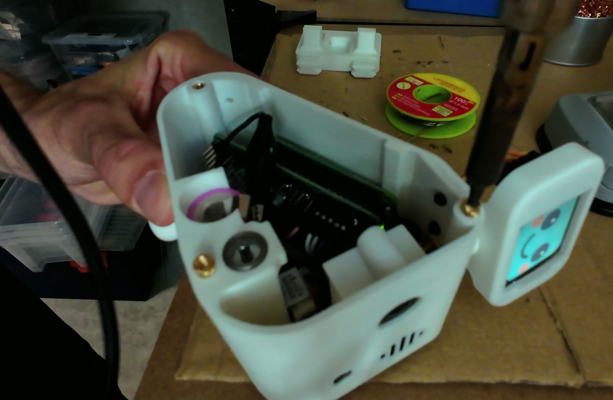
1. Mount the motors first
You need: main chassis, two matching encoder motors and leads, the new front-fastened motor clip, one M2 × 10 socket-head screw, one M2 nut and no washer for that clip.
- Define left and right from Robbi's viewpoint looking forward. Label the motor/encoder leads
LandR; attach their matching plugs while accessible. - Clean the new clip boss's side-loading nut slot and driver passage. From the open GPIO side, use tweezers to slide the M2 nut into the front-facing boss pocket. Keep it in position while starting the screw.
- Seat the gearboxes in the existing motor locations, with shafts aligned to the wheel openings. Keep wires clear of the rear encoder boards and rotating magnets.
- Introduce the new clip from the GPIO side, about 6 mm rearward and 15 mm above its final position. Lower it behind the fixed camera frame, then slide it 6 mm forward onto its boss. The motor contact lands must sit on the motors.
- Insert the M2 × 10 screw downward, without a washer. Use the long straight leg of a 1.5 mm Allen key through the open body-top/neck passage. Tighten gently until seated; do not bow the clip foot.
- Check actual motor retention and the thin printed motor wall. The old clip's rear screw position conflicts with the revised holder and must not be reused.
- Seat the MR128ZZ bearing squarely in the circular body recess at each motor-shaft opening. Align the flat on the D-shaped shaft with the flat in the wheel hub; press the wheel on straight without hammering the gearbox. Check wheel/body clearance. Leave the motor leads disconnected from the PCB until the wiring checks call for them.
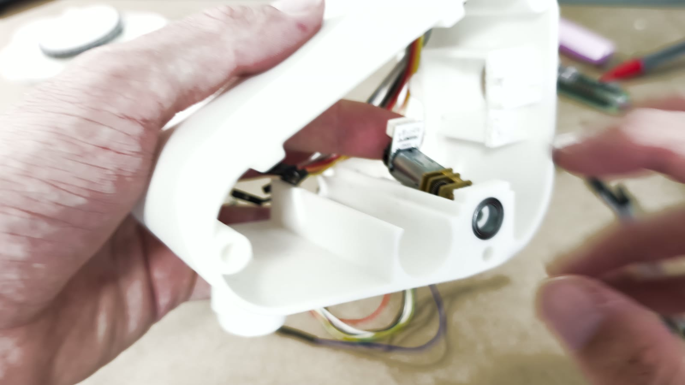
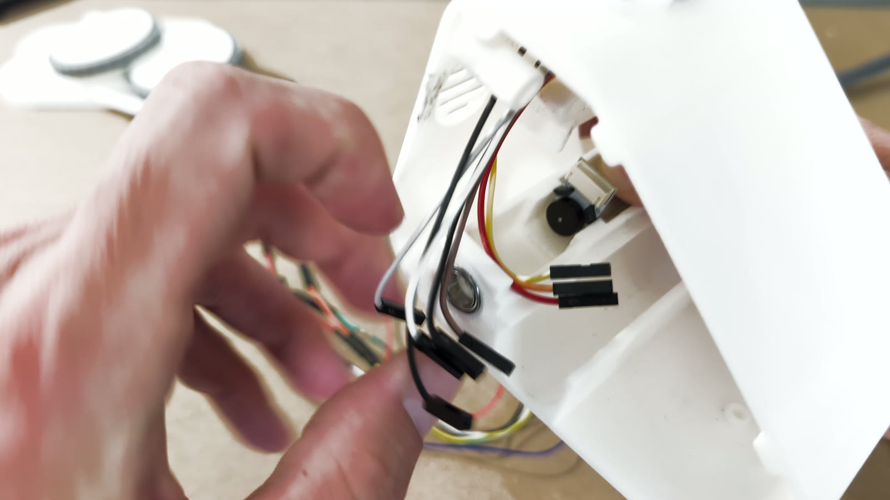
| Bearing and motor shaft | Wheel hub |
|---|---|
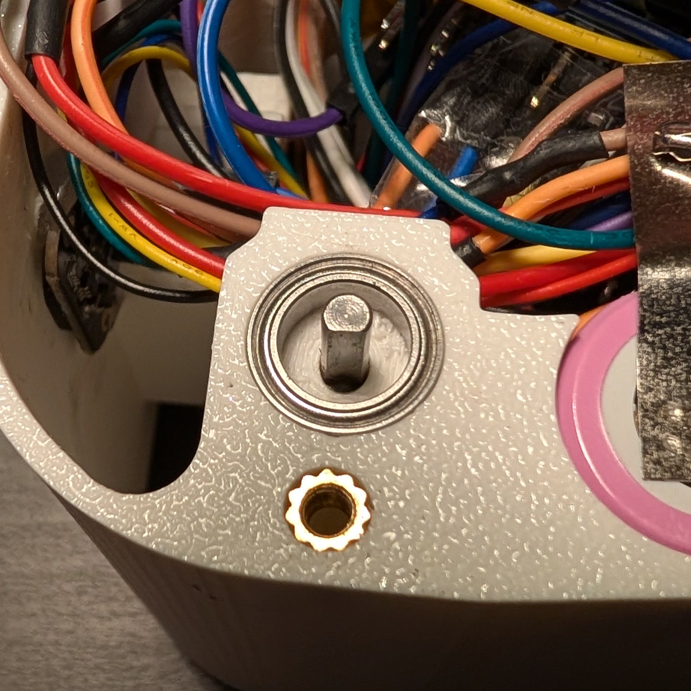 |
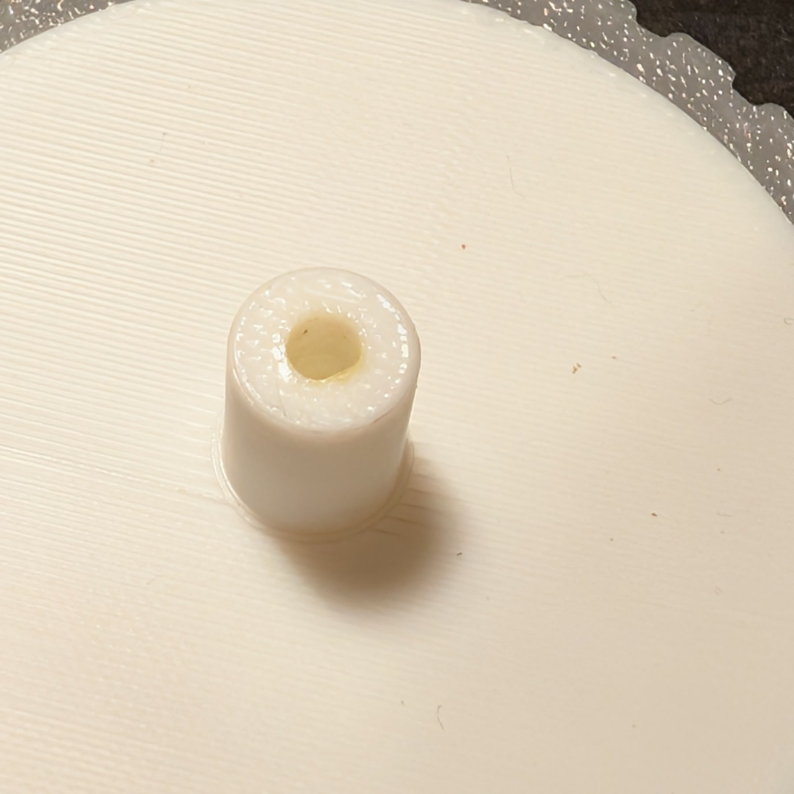 |
| Keep the bearing square in its seat. | Preserve the flat; do not drill the hub round. |
Checkpoint: motors cannot shift under the clip, wheels turn freely, and no wire can reach an encoder magnet or shaft. Complete this before fitting the holder, head, camera module or electronics.
2. Fit the ToF and battery holder
- Dry-fit the actual ToF board and cover in the forward locating outline. Keep the bottom header edge open and check that real solder tails clear the curved shell.
- Test readings through the front window using the already bench-tested electronics outside the shell. Power down and disconnect again before applying glue.
- Apply two small hot-glue fillets at the outer ears, clear of optical windows, pins and connector contacts. There are no ToF mounting screws, snap clips or rear clamp in this design.
- Trial-fit the 76 × 21 × 18.4 mm holder, its cell and both panels. The measured loaded height is 20.4 mm. Check the actual holder contacts, lead exit and wire clearance; then remove the cell again.
- Bond the empty holder to its flat seat using small accessible fillets suitable for the holder and printed material. Keep glue away from springs, contacts and the lead exit. Do not use the central Ø3.6 hole: safe screw-head space has not been established.
- Route the holder leads in the rear-side corridor, not through the tiny end gaps. Verify polarity against BAT: pin 1 positive, pin 2 negative. Leave BAT unplugged.
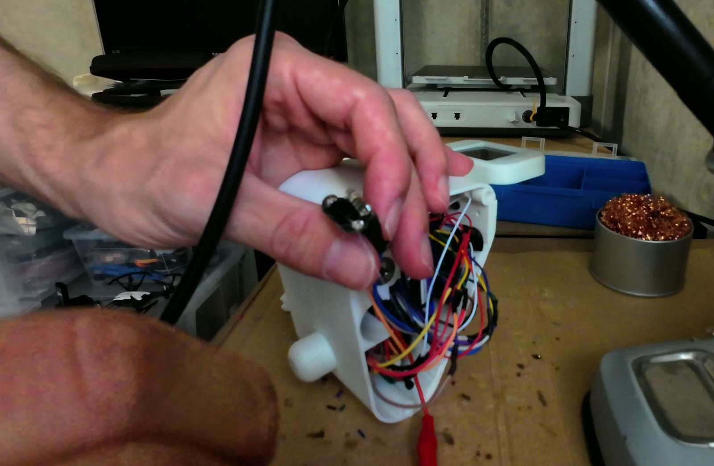
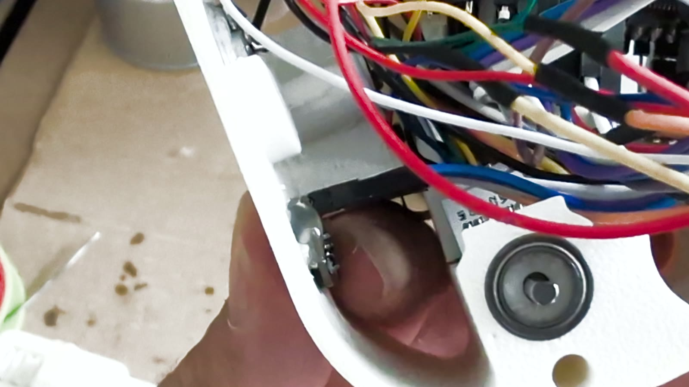
The model allows only about 1.0 mm of chassis floor and rear motor wall in the tightest regions, plus 0.8 mm panel pocket skins. Inspect the real print before gluing. The LCD/holder clearance is particularly tight; see the fit limits.
3. Install the external power button
With electronics and cell absent:
- Feed the rocker from inside outward through its slot, curved pad facing outside and contact tip toward SW1.
- Slide the keeper from the USB side into its keyed seat.
- Insert the split pivot pin from the side away from USB until its fork seats in the keeper cheek and retains it.
- Check free movement and spring return. Use the nominal rocker for the first complete-stack fit; do not trim or lengthen its contact to compensate for a wrong stack height.
Checkpoint: the mechanism moves freely. Actual switch actuation is checked only after the board stack is seated, with the cell out and USB disconnected.
4. Assemble and prewire the board stack
Keep the rear electronics cover outside the body and all power disconnected.
- Insert four M2 × 20 socket-head screws from outside the rear cover. Place the Pi underside on the rails between the stops, with its component side facing inward and its GPIO tails in their relief.
- Fit four 11 mm printed spacers, one at each Pi mounting location on the component side.
- Align the custom PCB's underside female socket with all 40 GPIO pins. Press the boards together squarely, with the custom board's USB-C socket toward the lower rear opening.
- Fit compact M2 washers and nuts above the custom PCB. Tighten evenly, without bowing either board. Verify actual Pi thickness, soldered-header height and full mating depth: screws must not pull an incompatible header stack into place.
- Fit the left-angle Micro-USB OTG adapter to the Pi's USB data port, then the USB microphone.
PWR INdoes not carry microphone data. - Preconnect constrained board-side plugs, particularly LCD and MENCODER_L. Leave the remote display ends loose for threading through the neck. H2 and SERVO1 stay empty in the standard build; if using H2 in a modification, its PCB plug also needs connecting before insertion. Leave BAT unplugged.
- Use individual display housings, leave slack for the stack's 4 mm movement and check the actual LCD/left-encoder wire bends against the holder. Keep wires away from the cell, clip, button and panel rims. CAD wire shapes are local clearance references, not a full harness specification.
Stack, outside to inside: rear cover → Pi underside → Pi → 11 mm spacers/header gap → custom PCB underside → custom PCB component side.
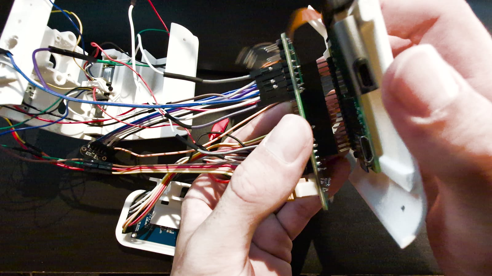
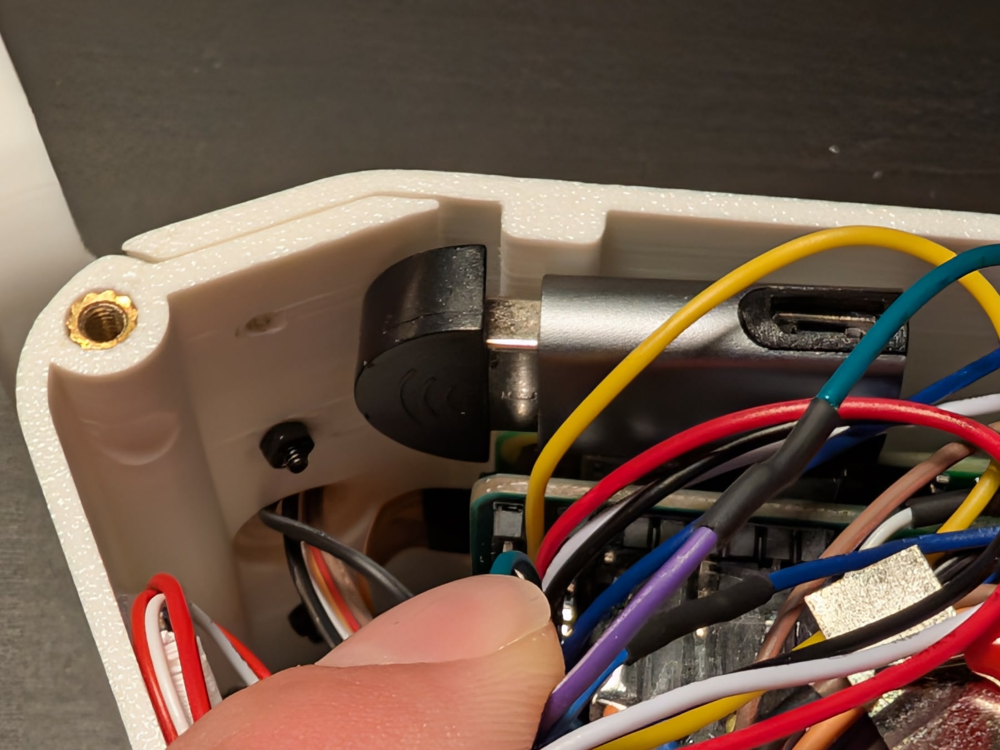
5. Insert the stack and connect BAT
Do the first complete mechanical fit with no cell installed and no USB power.
- Keep the fixed head and both side panels off. Hold the rear-cover/board stack 4 mm outward from its final seated plane.
- Offer it through the open GPIO side, slide sideways and align the rear-cover keys while guiding the loose harness. The curved lower lip prevents a simple straight rear insertion.
- While the stack is still 4 mm outward, connect BAT. Then move the whole stack 4 mm inward, perpendicular to the boards, to seat its keys. Do not try to unplug or force constrained LCD/H2 plugs with the stack seated.
- Check that no wire is trapped against the holder, button or rims. Do not widen the body by centimetres as in the older video. If it catches, withdraw it and find the interference; do not pull it closed with screws.
- Still with the cell out and USB disconnected, test the button against the actual SW1: no preload in every orientation, a click before the rocker stop, and full release. The nominal rest gap is 0.20 mm; the assembly target is 0.15–0.25 mm. Test through the available play.
- Try the actual USB cable. Its overmold must pass through the 14 × 8 mm opening far enough to reach a socket mouth modelled 12.63 mm behind the opening. A coupon or visible hole does not prove full seating.
- Once all dry-fit checks and soldering are complete, withdraw the stack 4 mm, disconnect BAT and slide it out again. With the head still off, fit the cell according to polarity markings, then repeat the side insertion: BAT at the 4 mm offset → seat inward. Keep the board switched off while completing the head and remote connections; verify the 5 V output is off before touching signal plugs. If the output is live, stop and disconnect BAT before changing connections.
If the enclosure fit or power-off state is uncertain, continue the remaining fit checks without the cell. Cell installation can wait until the service opening described below. The new charging opening does not change the need to shut down and switch off before connecting a charger.
6. Fit the fixed head, display and service cover
This design has no head adjustment, turning or tilting joint. Fit it only after the electronics stack is seated.
- Seat an M3 nut in each open-top head ear pocket. Place the carrier on the body.
- From inside the chassis, fit two M3 × 12 socket-head screws with 7 mm OD × 0.5 mm washers upward into the nuts. The battery-side screw enters straight from its open side. On the GPIO side, introduce the screw with its head tilted about 15° rearward, then straighten it as the tip enters the roof hole to clear the fixed camera bridge. Tighten gently with a 2.5 mm Allen key.
- Feed the eight loose display leads and their individual housings one at a time through the Ø12 mm neck. A rigid eight-wide connector is not assumed to fit. Leave slack and support the PCB near its header while connecting.
- Place the display on its four locating studs. Use the LCD wiring table: PCB pins 1–8 are VCC, GND, SCL, SDA, RES, DC, CS, BLK. The display's first two power pins are reversed relative to the custom PCB; match signal labels, not wire colours.
- Fan the leads away from the cover's four long posts and right-side screw boss. The cover must not press the glass, display flex or components. The model assumes a 1.2 mm display PCB; verify the actual board and free seating before tightening.
- Insert the M2 nut in the rear-facing right boss. Offer the cover 1.5 mm below its installed height, move it forward to the rim, then slide it up 1.5 mm to engage its two hooks. Secure with one M2 × 6 socket-head screw. The hooks slide; do not flex them as snap clips or use the screw to drag the cover into place.
The approximately 24.65 mm cover posts are delicate retainers, not handles. If the actual display differs, check all four corner contacts equally; use small nonconductive shims only on intended corner pads if necessary. Never compensate by loading the glass or forcing the cover.
Checkpoint: the fixed head is secure, the display wires remain relaxed, and the service cover meets its rim without force. The earlier bracket/central-screw head photographs are not assembly instructions for this head.
7. Fit the camera and close the body
- Fit the camera after tightening the head fasteners so it cannot block the long Allen key. The camera seats move 1 mm forward and the small bores are now 14 mm deep, not 15 mm. Check actual screws clamp the board before bottoming; keep the lens centred and board flat.
- Connect the camera ribbon with power off and close both latches. Use a relaxed inverted-S route with broad bends and slack at both connectors. Do not copy sharp folds visible on the prototype or trap the ribbon beside the head screws or panel edges.
- Position the unchanged speaker behind its grille without loading the diaphragm. Check its two leads against SPEAKER/H3. Connect the remaining remote ends with the board output off and verify all leads against WIRING.md.
- Inspect insulated joints, motor/encoder clearance, holder leads and display slack. There must be enough free lead for the stack's initial 4 mm service movement.
- Secure the rear cover and both side panels using the matching unchanged attachment hardware. Do not force a panel closed with its screws. Recheck button return, USB plug access, motor retention and camera-ribbon clearance after tightening.
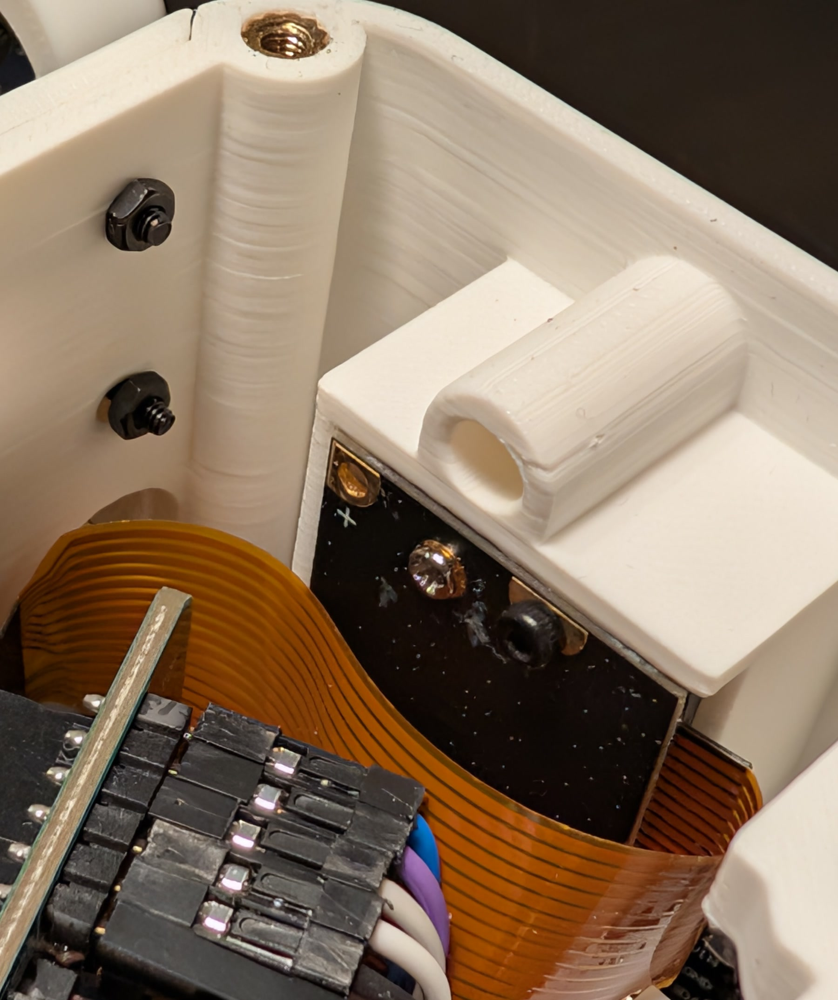
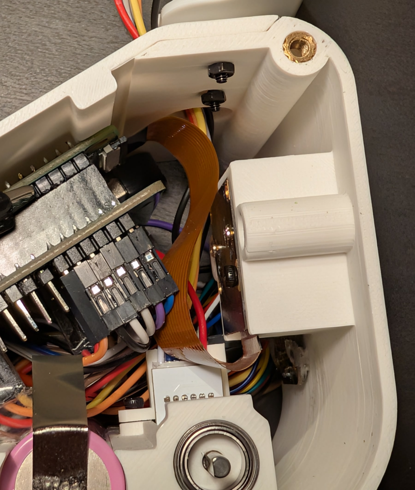
Rear support foot
Retain the rounded rear support foot/skid under the body. With the two wheels it provides the third floor contact and keeps the rear shell off the floor; it is not a powered wheel.
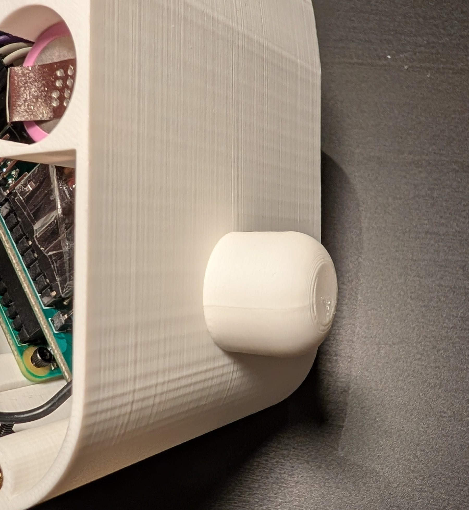
Set Robbi on a flat surface. Both wheels and the rear foot must support him, with the shell and cables clear of the floor. Recheck the camera image and ToF after closure, then continue with IMU, motor and voice checks. Keep the first powered wheel test raised off the floor.
Service and disassembly
Shut the Pi down cleanly, switch the board off and disconnect external USB power before opening or changing plugs. Do not treat the printed rocker as a battery-isolation switch.
Display only: remove its M2 rear-cover screw, slide the cover down 1.5 mm, then pull rearward. Unplug the display leads before lifting the PCB straight off the studs. The head can stay attached.
Electronics stack or cell:
- Remove both side panels. Remove the camera module if it obstructs head-fastener access; the CAD tool-access check did not include a measured purchased camera left in place.
- Open the head cover. Label and unplug display leads at the display, free ties and feed their individual housings down the neck. Leave the constrained LCD plug attached to the PCB.
- Loosen both M3 head screws about 5 mm, support and lift the head at least 10 mm. Remove both screw/washer sets completely before sliding the electronics. The battery-side screw withdraws about 12 mm straight down; the GPIO-side screw withdraws about 10.5 mm, then its head tilts rearward up to 15° as the shank leaves the roof. Keep each washer with its screw.
- If populated for a modification, unplug SERVO1 while the stack is seated. Free other remote harness ends and ties as needed, then release the rear-cover screws.
- Move the stack 4 mm outward, disconnect BAT at that offset, then slide it out through the GPIO side while guiding the loose harness. Keep constrained board-side LCD, MENCODER_L and any fitted H2 plugs attached until the stack is outside.
- Release the actual cell-holder spring contact, lift the cell approximately 20 mm, then withdraw through the battery side. The checked external envelope is up to 70 × Ø18.6 mm; actual contact travel was not modelled. The bonded empty holder can stay in place.
Reassembly reverses the mechanical route: side entry while 4 mm out → BAT → seat inward → head → camera and panels. Repeat wiring, button and clearance checks. To remove the button pin with the stack out, squeeze its exposed fork tips with fine tweezers and pull straight out; do not force the fork backwards through its bore.
6. Calibrate and test Robbi
Guide home · ← Assembly · Troubleshooting →
Do this with the confirmed PCB wiring, motor supply checks and software pin mapping complete. The original robot's measurements are starting estimates, not calibration values for every printed robot.
1. Calibrate the IMU
Complete the final wiring and fitting checks before powering up. Open the dashboard's IMU tab and follow its calibration procedure in the order shown. Keep motor output disabled during this step.
When calibration is complete, gently rotate the robot by hand and check that the orientation responds correctly and settles when held still. Record the result before moving on to wheel tests.
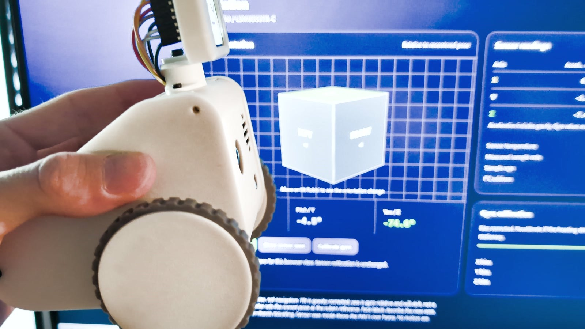
The illustration shows an older dashboard design. Use the IMU tab and its calibration instructions in your installed version.
2. Inspect before enabling movement
- Shut down and remove power. Reconnect the labelled motor/encoder leads, inspect polarity and look for anything near the wheel or encoder magnet.
- Set
hardware.right_encoder_b_pin: 16for the supplied PCB. The wiring table traces right encoder B to Pi physical pin 36 / BCM16. Use7only for an explicitly rewired repair; configure the field rather than editing the Python source. - Confirm the rear support foot is fitted, then support the body so both wheels are off the surface. Keep fingers and loose cables clear. Make the physical power cutoff immediately reachable.
- Leave autonomy, heartbeat, daily tasks and servo outputs disabled. Keep the obstacle guard enabled for forward motion; place a clear target within the sensor's usable range if needed to obtain a valid sample.
- With motor power disabled, observe the encoder counts while slowly rotating each wheel. Both A and B should change, and turning one wheel should affect only its own channel. Do not force a gearbox that resists back-driving; use the controlled raised-wheel test after wiring checks instead.
Legacy tools: tools/legacy/encoder_probe.py has an independent hard-coded repair map. Its --pulse option also commands 60% duty. Do not run it unchanged as a generic new-build test. Use a release-matched diagnostic or the runtime's motion diagnostics. Stop the runtime before any independent tool claims GPIO.
3. First powered wheel tests
The runtime requires both runtime.calibration_confirmed: true and hardware.enable_motors: true before it permits motor output. The first flag is a manual acknowledgement, not evidence that software has measured calibration automatically. Enable the two flags only after the preceding wiring, pin ownership, supply and raised-wheel checks; finish the measurements below before floor operation.
Keep the supplied conservative PWM caps initially. A duty cap alone does not make an incompatible supply safe. If the motor does not start, stop and investigate friction, voltage and the appropriate duty range rather than leaving it stalled.
- Apply one short, bounded left-wheel command, around 200–300 ms, at a verified low duty. Stop completely.
- Confirm physical forward direction and positive logical forward counts. Repeat for the right wheel.
- If the motor direction is wrong, check its wiring and the runtime's
motion.left_motor_invert/motion.right_motor_invertsettings. If encoder counts have the wrong sign, use the correspondingmotion.encoder_left_invert/motion.encoder_right_invertsetting after checking A/B wiring. - If the left command moves the right wheel, fix the side assignment. Do not hide an accidental harness swap behind several simultaneous inversion changes.
- Repeat both directions and use Stop during a short command. A wheel that continues running, has no encoder feedback or starts unexpectedly is a failed test.
Record which setting you changed and repeat the same test. Change one variable at a time.
4. Measure wheel travel
Measure the outside diameter of the finished rolling surface, including its tread, and the distance between wheel contact centre lines. Enter dimensions in centimetres for motion.wheel_diameter_cm and motion.wheel_base_cm.
Measure counts over several exact wheel revolutions, then divide by the number of revolutions. motion.encoder_counts_per_rev must mean decoded counts per output-wheel revolution, including the gearbox and the software's quadrature counting convention. The seller's motor-shaft pulse count is not necessarily that number.
The prototype profile uses 6.2 cm diameter and 2800 counts/revolution. Its effective turn spacing has been adjusted between recorded builds. Re-measure instead of inheriting those values silently.
5. Straight-line checks on the floor
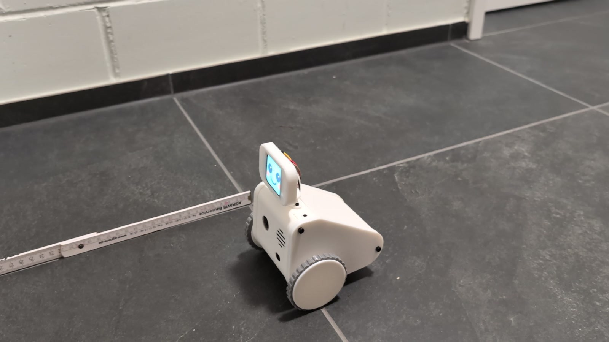
- Use a clear, level floor away from stairs. Check that the two wheels and rounded rear support foot support the body with the shell clear of the floor. Mark the start position of a fixed reference point on the robot, such as the axle centre line.
- Start with a 10 cm forward move at low speed. Check direction, stop behaviour and approximate distance.
- Increase to 50 cm, then 100 cm after the shorter move is reliable. Measure from the same reference point after the robot has stopped.
- Repeat at least three times and record forward distance and sideways drift. Test reverse travel separately with the space behind Robbi clear.
If every run travels approximately the same proportion too far or too short, check wheel diameter and counts-per-revolution. If changing only effective wheel diameter for a systematic distance error:
new diameter = old diameter × commanded distance / measured distance
For example, a commanded 100 cm that repeatedly travels 90 cm suggests multiplying the current diameter by 100/90, provided slip, counting errors and units have already been excluded. Do not adjust diameter and counts-per-revolution at the same time. A path that curves points first to wheel drag, mismatched tread, missed counts or side mapping, not just a global distance scale.
6. Turning checks
Mark the starting heading on the floor and test left/right 90° turns, then 180° and a full revolution. Let each turn settle before measuring. Repeat in both directions.
Confirm the straight-distance calibration first. Adjust effective wheelbase only when the observed error is repeatable and wheel slip/encoder problems have been excluded. If the active controller uses IMU feedback or a separate turn gain, inspect that control mode before applying an odometry-only correction; do not tune several mechanisms to compensate for one another.
Checkpoint: turns are repeatable in both directions, neither wheel loses counts, and Stop works throughout. Record the measured error; “looks roughly right” is not a calibration result.
7. Sensors and interruption tests
With a soft obstacle and room to stop, verify the forward range guard at low speed. A configured 12 cm threshold is a starting setting, not proof that stopping distance is adequate at every speed.
Verify that stale or missing forward range blocks forward motion. Disconnect sensors only with power off; restart and inspect the expected fault before attempting a supervised check. The absence of a second ToF means there is no validated cliff detection. Keep all floor tests away from edges.
During a short finite movement, interrupt the network and verify that the command expires and does not resume when the connection returns. Test the physical cutoff separately. Confirm the robot recovers to a stopped state after restart.
8. Recheck the finished assembly
- Shut Linux down, switch off and remove the cell.
- Dress the wires into the body. Preserve the head's service loop; keep the camera ribbon away from screw tips and sharp folds.
- Check each panel is seated without force. If a gap remains, reopen it and find the obstruction instead of tightening harder. Protect the camera ribbon when refitting the back panel.
- Turn each wheel and move the head by hand again. Check the power switch, charging/battery access and microSD access.
- Reinstall the battery, power on, and repeat the face, camera, microphone, speaker, sensor and short motion checks. A fault that appears only after closing is often a pinched lead or shifted connector.
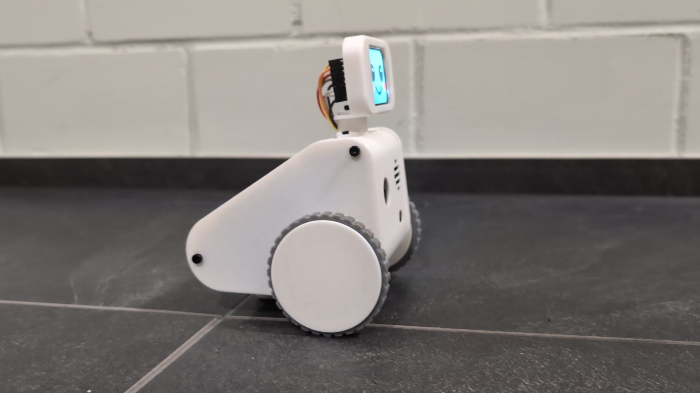
Complete the build record, save your final configuration and package versions, and keep a backup of the working SD card. Enable autonomous features individually only after manual movement and sensing are reliable. Room-scale navigation and a kitchen-and-back demonstration require their own testing; assembling the hardware does not establish that level of accuracy.
9. Test STT, LLM and TTS
Hardware checks do not yet prove the complete conversation works. Configure your own providers, then check each part separately.
| Check | Try this | Pass condition |
|---|---|---|
| STT — speech to text | Say a short sentence into the microphone. | The transcription matches what you said. |
| LLM — language model | Send a simple question through typed chat. | Robbi produces a relevant, coherent answer. |
| TTS — text to speech | Play a short response through the speaker. | The voice is understandable and free of obvious clipping or distortion. |
| Full conversation | Ask aloud, wait for the reply and follow up. | Listening, transcription, response and speech work together. |
Run robbi-setup if you skipped provider setup or want to change keys. The wizard stores your own keys in the runtime’s .env.secrets with owner-only permissions and leaves calibrated geometry intact. Dashboard Settings → Connections & API keys also saves provider keys, accepts custom model IDs and local/OpenAI-compatible endpoints, discovers models and tests the connection. Select Tavily there to enable current web/news lookup. Choose a model and, for ElevenLabs, a voice available to your own account. No helper server is installed on the Pi.
After the individual checks above pass, set voice.enabled: true with wake_engine: local_wake, and enrol your own examples in the Wake word tab: at least four positives, three negatives and two noise clips, then run browser calibration and review the result before applying it. Record a few natural examples at the intended speaking distance. Check recognition and false triggers before leaving listening enabled. Keep autonomy, Telegram and proactive tasks off until basic interaction works.
10. Verify automatic startup
The installer already creates and enables robbi-v2.service for your Linux account, using the same config/robot.yaml you calibrated. No service template or profile switch is needed.
sudo systemctl restart robbi-v2.service
systemctl status robbi-v2.service --no-pager
journalctl -u robbi-v2.service -n 80 --no-pager
Test a reboot and confirm the dashboard, settings and peripherals recover. Do not leave a foreground instance running alongside the service. The motor-disable helper assumes enable on BCM26 and supplements a reachable physical cutoff.
To stop automatic startup: sudo systemctl disable --now robbi-v2.service. To restore it: sudo systemctl enable --now robbi-v2.service. Back up your working configuration, private secret file and var/ to a private location after calibration.
7. Troubleshooting
Power off and remove the cell before moving plugs, swapping wires or touching the CSI ribbon. Inspect logs and live values before changing several settings at once.
| Symptom | Check first | Next step |
|---|---|---|
| Pi does not boot | Press the PCB power button; then check battery polarity, loaded supply voltage, microSD image and full header alignment | Isolate the Pi from the custom board and test it with its proper USB supply |
| Pi resets when motors start | Power rail droop, cell/holder contacts, motor startup load, protection trips | Stop motor tests and measure the loaded rails; do not disable protection |
| Board gets hot or a supply is shorted | Power immediately off; solder bridges, offset header, reversed lead | Correct the hardware fault before another power attempt |
| Dashboard unavailable | Runtime/service status, Wi-Fi and the Pi’s current address | Check journalctl -u robbi-v2.service -n 80 --no-pager; confirm selected config and port |
| Installer says no runtime release | Only the bootstrap script has been published so far | Wait for the runtime release; it makes no system changes while unavailable |
| Installer interrupted | Rerun the same installer/release | Completed steps resume; do not run this fresh installer over an unrelated existing robot |
| Setup rejects OS | Check /etc/os-release and python3 --version |
Use Bookworm Lite 64-bit; Trixie/Python 3.13 is not supported yet |
| New Wi-Fi does not connect | Correct 2.4 GHz SSID/password and a deliberate reboot | The wizard tests the current connection only; restore the original Imager network if needed |
| LLM test fails | Run robbi-setup and check key/model/account access |
HTTP 401 means credentials, 404 model/endpoint, 429 quota/rate limit; the dashboard still works offline |
| Import or dependency error | Python version and the active .venv |
Use the Bookworm/Python 3.11 environment and pip check; preserve the apt camera/numerical stack |
| Display lights but no face | LCD signal order, SPI device, D/C and reset | Check runtime logs and the ST7789 driver; do not assume backlight means SPI is wired correctly |
| Face is clipped or shifted | Exact panel variant and runtime dimensions | Verify 240 × 280 hardware, runtime 280 × 240 and offset_left 20 |
| Camera not detected | Power-off ribbon seating, contact direction and adapter type | Test rpicam-hello --list-cameras with Robbi stopped; follow the camera manufacturer's overlay instructions |
| Camera is detected but image is dark/blocked | Lens cap/film, enclosure opening and exposure | Inspect a saved still with the head open |
| USB microphone missing | USB data port and OTG adapter | Check arecord -l; a charge-only adapter or PWR IN port will not work |
| Speech is silent | ALSA card name, speaker connector, overlay and volume | Check aplay -l; confirm the amplifier overlay does not claim motor GPIO4 |
| Speech distorts or rattles | Excess volume, wrong speaker impedance, grille pressure | Lower software volume and inspect the 8 Ω / 0.5 W speaker mount |
| Typed chat works but voice does not | Capture sample, STT provider and wake references | Test recorded audio first, then speech recognition, then wake detection |
| ToF absent or stale | H1 wiring, XSHUT13 and runtime status | H1 boots at 0x29 and is reassigned to 0x30; keep unused H2 disabled |
| IMU view does not move | Correct chip, I²C identity and fresh samples | Check live values and follow calibration in the dashboard’s IMU tab; verify the module identity before changing hardware |
| Motor output refused | Both runtime motor gates and a fresh forward-range sample | Finish the wiring/bench checks before enabling output; do not bypass the guard for floor tests |
| One wheel turns, the other does not | Six-wire motor harness and correct side assignment | Check motor output separately from encoder A/B feedback |
| Encoder count stays zero | Supply, ground, both A/B pins and software pin map | Reconcile GPIO16 versus the original robot's GPIO7 repair; do not bridge pins |
| Robot spins instead of driving straight | Left/right mapping, direction and encoder signs | Raised-wheel test one side at a time; change one setting at a time |
| Consistent distance error | Wheel circumference and decoded counts per wheel revolution | Re-measure and calibrate one distance scale parameter |
| Irregular drift or different turns each time | Wheel rubbing, traction, loose hubs, missed counts and voltage | Fix the mechanical/electrical cause before retuning the controller |
| Works open, fails closed | Pinched ribbon, strained plug, screw contact or wheel obstruction | Reopen, inspect and reroute; do not force the panel shut |
When reporting a fault, include the board/print/software versions, the exact symptom, relevant log lines and a clear connector photo. Remove API keys, Wi-Fi credentials and personal recordings before sharing diagnostics.
PCB fabrication files
Use these three matching manufacturing files together. Their SHA-256 checksums are recorded in the release manifest.
| File | Purpose |
|---|---|
| gerber_v1.zip | Board artwork, outline and plated/non-plated drill files |
| bom_v1.csv | Assembly bill of materials, including supplier part numbers |
| pickandplace_v1.csv | Component positions, side and rotation |
The Gerber ZIP contains four copper layers: top, bottom and two inner layers. Use all four layers. The BOM contains 31 grouped rows covering 59 component references; the placement file contains the same 59 references, with no unmatched references in either direction.
Schematic
| File | Purpose |
|---|---|
| Schematic PDF | Printable, zoomable circuit diagram |
| EasyEDA Standard schematic | Editable schematic export; import it into EasyEDA Standard |
| Protel/Altium netlist | Exported component and pin-to-net list for comparison |
| Comparison record | Scope and results of the checks against the published manufacturing files |
The schematic uses the IP5306 power circuit found on this PCB. Its 59 component references, values and footprints match the BOM and placement exports. All 208 connected schematic pins match the pad-to-pad connections traced from the published Gerber copper and plated drills; the other 20 numbered pads have no other component pad connected in that trace. The right encoder B signal reaches U6 pin 36 / BCM16, and the amplifier's SD_MODE pin is tied to 3V3.
Important
Several test-point references on the schematic retain names from an older design.TP_USB_DETECTis connected to right motor output 2, not USB detection; the board silkscreen calls itMR2.TP_I1C_SCLis Pi pin 27.TP_USB_VBUS1andTP_USB_VBUS2are Pi pins 10 and 28, respectively. OnlyTP_USB_VBUSwithout a suffix is on the USB 5 V input. Follow the actual net labels and wiring reference.
The schematic's “Battery Protection” heading is a legacy section label; this sheet does not show a separate cell-protection IC and FET stage. It does not establish the protection fitted to a particular cell or pack. The matching checks establish documentation consistency, not an electrical safety, charging, load or thermal qualification.
Settings from the manufactured board
These settings were recovered from the manufacturer’s returned production package. The original Gerbers inside that package match the guide’s ZIP byte for byte.
| Setting | Value |
|---|---|
| Board outline | 75 × 45 mm |
| Material / thickness | FR-4 / 1.6 mm |
| Copper layers | 4 |
| Outer / inner copper | 1 oz / 0.5 oz |
| Solder mask / silkscreen | Green / white |
| Surface finish | Lead-free HASL |
| Via treatment | Solder-mask plugged, as recorded by the manufacturer |
The manufacturing panel is 75 × 71 mm, including two 13 mm process rails added along the 45 mm dimension. Those rails are manufacturing aids, not part of the enclosure-sized board. Submit the supplied 75 × 45 mm outline rather than resizing it to the panel dimensions. The exact dielectric stackup is not recorded in the recovered settings.
Machine-readable order settings · Connector pinout and orientation
Ordering sequence
- Upload the Gerber ZIP intact to the PCB manufacturer's order tool. Check its rendered outline, layer assignment, drill alignment and preview against the board photographs.
- Enter the settings above: four layers, 75 × 45 mm, 1.6 mm FR-4, 1 oz outer / 0.5 oz inner copper, green mask, white silkscreen and lead-free HASL. Check the manufacturer's interpretation of the via-treatment option and let it prepare the required assembly rails.
- Request PCB assembly, then upload the matching BOM and pick-and-place file together. Both
.csvexports are UTF-8, tab-delimited text. This package converts the original UTF-16 encoding without changing field values or row content. If the upload tool asks, choose UTF-8 and the tab delimiter, and review its imported part mapping. - Match parts by the specified manufacturer part and supplier part number. Several free-text
linkfields in the export point to unrelated products; do not let those override the actual MPN/LCSC selection. - Review the assembly preview, including polarized capacitors, USB-C orientation and the underside connector. Resolve substitutions against the intended footprint and electrical function before ordering.
- Confirm the through-hole assembly scope. U6 is the 2 × 20 female socket, placed on the bottom side and explicitly marked “HAND SOLDER BACK SIDE”. The BOM and placement file both include it; agree whether the manufacturer supplies/fits it or whether it is supplied for hand assembly. Do not have it fitted twice or on the top side.
- Check whether BAT, LCD, H1/H2, encoder, speaker/servo headers, test pins and switches are included in the assembly service or supplied separately. Keep optional fitted connectors electrically unused if the guide does not use them.
Parts already on the custom board
| Reference | Component | Function |
|---|---|---|
| U7 | IP5306, C181692 | Power-management stage |
| MD1 | DRV8833PWPR, C50506 | Two-motor driver |
| AMP | MAX98357AETE+T, C910544 | I²S speaker amplifier |
| U4 | LSM6DS3TR-C, C967633 | IMU |
| BAT | B2P-VH(LF)(SN), C160315 | Two-pin VH3.96 battery header |
| U6 | 2 × 20 female socket, C2977589 | Underside Pi connection |
The parts and visible Robbi 2026-09 layout correspond to the board in the build photographs. The wiring reference provides connector pin order and orientation checked against the manufactured copper layout. Older schematic exports using the BQ25895/TPS61088 power circuit do not describe this manufactured board.
Enclosure and print files
Guide home · Print preparation · Assembly
Warning
The 13 October 2026 printed design has not yet been physically tested as a complete build. It has nominal CAD-fit and reference slicer checks only. Fit, strength, button operation, connector access and optical clearance still need checking on actual printed parts and purchased components. The build video shows an earlier enclosure.
Use the matching files in 2026-10-13/ together. Do not mix earlier chassis, panels, motor clips or head parts with this revision. See design changes and fit limits.
Individual printable parts
STLs are supplied in millimetres, already oriented for printing. Import at 100% scale. Reference projects use a Bambu A1 / 0.4 mm nozzle; select your actual printer, nozzle, filament and build plate, then inspect and slice again. The 3MF files contain models and settings, not ready-to-run G-code.
Default reference settings: PLA, 0.20 mm layers, three walls, 15% infill. Button and clip exceptions are listed below. These are reference settings, not a physically validated print recipe.
| Part | Qty | STL | Reference 3MF | Orientation / exceptions |
|---|---|---|---|---|
| Main chassis | 1 | Chassis | 01 | Supplied side down; motor axes vertical; bed-only tree/organic supports. |
| Rear electronics cover | 1 | Rear cover | 02 | Outside face down, Pi rails up; normal supports under raised end lips. |
| Side panels | 1 each | Battery side · GPIO side | 03, both panels | Outside faces down; no supports. Preserve the 0.8 mm pocket skins. |
| New front-fastened motor clip | 1 | Clip | 11 | Broad side down; no supports; four walls, 40% configured infill, 26 top and 26 bottom layers make this small part solid. |
| 11 mm stack spacers | 4 | One spacer | 04, four spacers | Upright; no supports. STL = one spacer; 3MF = four. |
| Button rocker | 1 | Nominal rocker | 06 | PETG, 0.16 mm, bearing axis vertical, bed-only tree supports. |
| Button keeper and split pivot pin | 1 each | Keeper · Pin | 07, both parts | PETG, 0.16 mm, no supports; keeper flat, pin horizontal. Pin-only 3 mm outer brim, zero gap. |
| Fixed head carrier and hollow neck | 1 | Head carrier | 08 | Front bezel down, rear open upward; normal supports from bed only. |
| Head rear service cover | 1 | Head cover | 09 | Outside rear face down, posts up; no supports; reference outer-wall speed 40 mm/s. |
The button reference uses three walls, 15% configured infill and 20 top / 20 bottom layers, making these small parts solid. Preserve the flexible rocker leaf, keeper spring and split pin. Support the fork while gently clipping off its brim. Do not enlarge the 2.4 mm button bores or sand away the 2.30 mm pin's working diameter.
Small fit tests first
- Button/USB coupon: STL · project 05. Print with the three PETG button parts. The coupon checks motion, return and USB cable-overmold passage; it does not establish the switch gap or complete plug seating on the actual board stack.
- Optional ToF coupon: STL · project 10. Outside face down, no supports. Check the actual board, cover and solder tails; optical performance still needs testing in the robot.
- Optional rocker alternatives: 0.10 mm longer contact · 0.10 mm shorter contact. Use the nominal part first. A contact-length change requires repeating all real-stack button checks; it cannot compensate for an incorrectly seated header or wrong stack height.
Coupons and alternative rockers are test/adjustment pieces, not extra installed robot parts.
Original assembly STL
robo_4_astra.zip contains the original, unchanged robo_4_astra.stl. Extract it locally for an assembly reference. It includes modelled purchased electronics and contact surfaces between parts; it is not a prepared print plate. Do not print it as one object or interpret every disconnected surface as a printable part.
A surface comparison of the chassis, both side panels, motor clip and fixed head/rear cover agrees with the October individual exports within 0.026 mm at the sampled vertices, after accounting for pose and tessellation. This supports the revision match; it does not establish physical fit or a complete equivalence of every purchased reference component. The new individual files are unchanged exports from the October print release, not automatic splits of the assembly STL.
Parts identifiable in the supplied STL
The assembly also contains the original wheel hub and tread geometry. The individual October exports above cover the revised enclosure and functional print pieces; they do not include a separate wheel/tread print project.
| Original geometry | Build quantity | Handling note |
|---|---|---|
| Wheel centre/hub | 2 | One representative shape in the assembly; about 56 mm diameter and 20 mm depth. Preserve its D-shaped shaft opening. |
| Tread ring | 2 | One representative shape; 62 mm outer diameter and 5.8 mm axial width. Tread material and print settings still need confirmation. |
| Rear support foot/skid | 1 | Retain the underside floor-contact feature; see the assembly close-up. |
The MR128ZZ bearing sits in the body recess around the shaft opening. The 62 mm tread diameter is the prototype's 6.2 cm starting wheel-diameter setting; calibrate using the finished rolling surface.
Original archive/extracted-STL hashes and the added individual-file hashes are recorded in the hardware release manifest. Validation status distinguishes the recorded CAD/slicer checks from physical tests still to do.
Printed design: 13 October 2026
Print files · Assembly steps · Parts
Warning
This printed design iteration has not yet been physically validated. The CAD release records nominal fit, service-path and reference slicing checks. Those checks do not prove real printed fit, strength, reliable button actuation, charging access or sensor performance. Complete a dry assembly with actual components before committing adhesive or applying power.
The published assembly STL contains the revised chassis and fixed head; the earlier written guide and build footage described the prototype's assembly. The current guide now follows the October design. Individual October STLs and reference 3MF projects are available alongside the original assembly reference. Use the complete matching set.
Differences from the filmed prototype
| Area | October design and required change |
|---|---|
| Head | Fixed carrier with an enclosed hollow neck and separate rear service cover. No adjustable or motorised head joint. Use two M3 × 12 screws upward from inside the chassis, with nuts in the head ears. The older central retaining bracket is not the new cover. |
| Head cover | Offer it 1.5 mm low, move forward to the rim, then slide up 1.5 mm to engage two hooks. Secure with one M2 × 6 screw. The hooks slide; do not bend them as snap clips. |
| Electronics mounting | Four M2 × 20 screws from outside the rear cover pass through the Pi, four 11 mm spacers, custom PCB, compact washers and nuts. Confirm the actual header mating height; do not pull the boards together with screws. |
| Stack insertion | Keep the head and both side panels off. Enter from the GPIO side, hold the stack 4 mm outward, connect BAT, then seat it 4 mm inward. Do not stretch the body by centimetres as in the older footage. |
| Battery | Seat for a 76 × 21 × 18.4 mm holder; measured loaded height 20.4 mm. Glue the empty holder using accessible fillets after fit checks. Its central Ø3.6 hole is unused; no safe screw-head clearance has been established. |
| Motor retention | New front-fastened clip and side-loaded M2 nut replace the old rear fastener, which conflicts with the holder. Fit the motors and clip before the holder, head, camera or electronics. |
| Power button | Separate PETG rocker, keeper/return spring and split pivot pin operate SW1 from outside. Test no preload, a click before the stop and complete release with the actual stack installed. |
| Charging access | Rear opening is 14 × 8 mm; the modelled connector mouth is 12.63 mm behind it. The cable overmold must enter far enough for full seating. This enclosure change does not alter the PCB's brownout on charger connection. |
| Camera | The four seating planes move 1 mm forward; the screw bores become 14 mm deep. Check actual screws clamp before bottoming. Fit the camera after the head screws to preserve tool access. |
| ToF | Locating outline and two glue lands. Dry-fit the sensor, cover and solder tails; test readings through the window before two small glue fillets at the outer ears. No ToF screws or clamp. |
| Wiring | Battery position changes the local LCD and left-encoder routes. Use individual display housings through the neck and prewire constrained PCB plugs before inserting the stack. Keep H2 and SERVO1 empty in the standard build. |
| Servicing | Remove both side panels and the fixed head before taking out the electronics stack or replacing the cell. Unplug display leads at the display, feed individual housings down the neck, move the stack 4 mm out, disconnect BAT, then withdraw through the GPIO side. |
Fit limits to check on real parts
- Pi / PCB stack: the 11 mm gap is between the Pi's top surface and the custom PCB's underside. The Pi's 1.6 mm model thickness is an assumption. Verify actual PCB thickness, soldered header height, mating depth and clearance before tightening.
- Button: nominal SW1 rest gap is 0.20 mm; assembly target 0.15–0.25 mm. Check no preload in every orientation and through available bearing play. A coupon cannot validate the board datum or switch position.
- Head: front outside face to inside rear wall is 29.0 mm, overall depth 30.6 mm. The model assumes a 1.2 mm display PCB. Four approximately 24.65 mm cover posts must not load the glass, cable or components. The cover must meet its rim without screw force.
- Display leads: the neck opening is Ø12 mm. Feed eight individual connector housings one at a time. Local head references allow housings up to 14.25 mm long, wire up to Ø1.5 mm and R3 centreline bends; actual bought leads still need checking.
- Battery and harness: the local LCD route has only about 0.295 mm nominal clearance to the loaded-holder envelope, falling to about 0.161 mm in the tested PCB-offset cases. Its modelled R2 bend and the left-encoder R2.5 bend are clearance references, not permission to kink stiff wire. Full harness lengths are not specified by CAD.
- Thin plastic: the minimum battery-seat floor is about 1.004 mm, rear motor wall about 1.018 mm, and panel pocket skins 0.8 mm. Check real print integrity and motor retention. Reference slicing is not a strength test.
- ToF: a 1 mm solder-tail reference clears in CAD, but actual tails/cover and optical field of view were not measured. Verify fit and ranging in the real shell.
- Cell service: the checked external envelope is up to 70 mm long × Ø18.6 mm. Actual spring-contact travel is not modelled. With the stack removed, the cell lifts about 20 mm before withdrawing through the battery side.
What is established
The October release records 15 closed STL meshes, 11 unsliced reference 3MF projects and nominal assembly/service checks. The individual meshes and projects are published unchanged. Validation status and the hardware manifest identify the files.
Physical print fit, material behaviour, repeated button use, motor retention, loaded wire clearance, optical performance and a complete new-enclosure build remain unverified. This mechanical revision does not change the PCB pinout or establish new electrical, charging or motor-load limits. Use the wiring reference, bench tests and release checklist.
Release checklist
Complete these items before labelling the release independently reproducible. This page tracks specifications and tests that remain open.
Mechanical files
- [x] Compare the published assembly STL with the October chassis, panels, new motor clip and fixed head/cover; sampled surfaces agree within mesh export tolerance.
- [x] Include the unchanged 15 individual October STL exports and 11 unsliced reference 3MF projects; keep the original assembly STL as a reference.
- [x] Document millimetres/100% scale, reference orientation/supports and the PETG button / solid clip exceptions. These are reference slicer results, not a physically validated recipe.
- [x] Specify four M2 × 20 stack screws/four 11 mm spacers, M2 × 10 clip fastener, M2 × 6 head-cover fastener and two M3 × 12 head fasteners with corresponding nuts/washers.
- [x] Correct the written order: clip before holder/electronics; GPIO-side stack entry at 4 mm offset with head off; BAT then inward seating; head then camera.
- [x] Label the video/photographs as an earlier enclosure; remove the old adjustable-head and body-flex instructions from the current sequence.
- [ ] Physically print and dry-assemble the matching October enclosure. Check thin walls, actual motor retention, Pi/header stack height, LCD/holder clearance, button no-preload/click/release, USB seating, head hooks/posts, camera screws and ToF optics.
- [ ] Validate material strength, repeated button use, cable strain and full assembly/service routes on actual parts.
- [ ] Confirm unchanged side-panel/rear-cover/camera fasteners, insert dimensions/counts, bearing counts and any wheel retention.
- [ ] Supply separate wheel/tread print files and confirm tread material and successful print settings. The assembly reference contains the original hub and tread geometry.
- [ ] Add current-revision assembly photos after the physical build; existing photos identify components and earlier techniques.
Electrical specification
- [x] Add a component-side connector drawing and numbered pin tables for all connectors used in this build; verify their copper connectivity in the manufactured Gerbers.
- [x] Archive the matching editable EasyEDA schematic, PDF and netlist. The exported 59 component references, footprints and values match the manufacturing BOM/placement; all 208 connected schematic pins match the traced Gerber copper. Note the legacy test-point names in the PCB notes.
- [x] Recover manufactured board settings: 75 × 45 mm, four layers, 1.6 mm FR-4, 1 oz outer / 0.5 oz inner copper, lead-free HASL, green/white; distinguish the 75 × 71 mm assembly panel.
- [ ] Confirm exact dielectric stackup and which through-hole connectors arrived fitted; U6 is already marked for backside hand soldering.
- [x] Trace MENCODER_R pin 4 to U6 pin 36 / BCM16 in the supplied Gerbers. Use
hardware.right_encoder_b_pin: 16; GPIO7 remains a repair option. - [x] Trace MAX98357A SD_MODE to 3V3; installer documentation uses
max98357a,no-sdmodeto leave motor GPIO4 available. - [ ] Confirm the installed overlay and sound output on the fresh-card acceptance run.
- [x] Document power-button startup and named PACK− / PACK+ / 5V / 3V3 test points; distinguish battery-only checks from the Pi-supplied 3.3 V rail.
- [ ] Record actual unloaded/loaded voltages, cell/protection configuration, charge settings and permitted simultaneous inputs.
- [ ] Validate the supply, duty and load limits for the 3 V motors, including startup and thermal checks.
Software and repeatability
- [ ] Publish this reviewed source snapshot with its sealed runtime manifest under an immutable tag in ace-builder/Robbi. A separate runtime Release is optional.
- [ ] Complete a fresh Bookworm 64-bit installation and record the working package versions.
- [ ] Validate the generated config/robot.yaml, setup wizard and service on a fresh Pi, including missing peripherals, network recovery and dashboard IMU calibration.
- [ ] Complete the build record: movement, stop/fault/restart behaviour, STT, LLM, TTS and full spoken interaction.
- [ ] Have another builder follow the guide without additional private instructions.
- [x] Prepare non-commercial code, CAD/documentation/artwork licences and retain third-party notices; exclude credentials and personal runtime state. Review these proposed terms before publishing.
Publication scope
The repository contains the reviewed software snapshot and the hardware guide. Publication does not establish physical validation of the revised printed enclosure. No .env files, owner data, private addresses, custom voice IDs or device-specific deployment records may enter a release.